Towards Scalable and Versatile Weight Space Learning
Abstract摘要
Learning representations of well-trained neural network models holds the promise to provide an understanding of the inner workings of those models. However, previous work has either faced limitations when processing larger networks or was task-specific to either discriminative or generative tasks. This paper introduces the SANE approach to weight-space learning. SANE overcomes previous limitations by learning task-agnostic representations of neural networks that are scalable to larger models of varying architectures and that show capabilities beyond a single task. Our method extends the idea of hyper-representations towards sequential processing of subsets of neural network weights, thus allowing one to embed larger neural networks as a set of tokens into the learned representation space. SANE reveals global model information from layer-wise embeddings, and it can sequentially generate unseen neural network models, which was unattainable with previous hyper-representation learning methods. Extensive empirical evaluation demonstrates that SANE matches or exceeds state-of-the-art performance on several weight representation learning benchmarks, particularly in initialization for new tasks and larger ResNet architectures.
学习训练充分的神经网络模型的表征，有望帮助我们理解这些模型的内部工作机制。然而，已有工作在处理较大规模网络时存在局限，或仅针对判别式任务或生成式任务中的某一类。本文提出了用于权重空间学习的 SANE 方法。SANE 通过学习与任务无关的神经网络表征，克服了以往方法的局限；这些表征能够扩展至架构各异的更大规模模型，并展现出超越单一任务的能力。我们的方法将超表征的思想扩展至对神经网络权重子集的序列处理，从而能够将较大规模的神经网络以一组词元的形式嵌入所学习的表征空间。SANE 能够从逐层嵌入中揭示模型的全局信息，并能够以序列方式生成未见过的神经网络模型，这是以往超表征学习方法无法实现的。广泛的实证评估表明，SANE 在多个权重表征学习基准上的性能达到或超过了当前最先进水平，尤其是在新任务的初始化以及更大规模 ResNet 架构方面。
Keywords:关键词：
1 Introduction1 引言
The exploration of the “weight space” of neural network (NN) models, i.e., the high-dimensional space spanned by the model parameters of a population of trained NNs, allows us to gain insights into the inner workings of those models.
探索神经网络（NN）模型的“权重空间”，即由一组已训练 NN 的模型参数所张成的高维空间，有助于我们深入理解这些模型的内部工作机制。
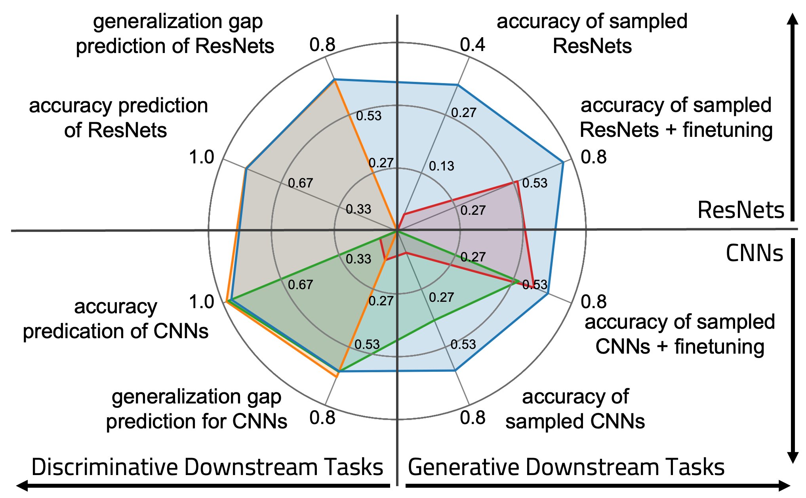
Figure 1: Aggregated results of 56 experiments showing (left:) four discriminative downstream tasks in $R^{2}$, and (right:) four generative downstream tasks in accuracy, each evaluated on (bottom:) CNNs model zoos trained on 4 datasets (NMIST, SVHN, CIFAR-10, STL) and (top:) ResNet18 model zoos trained on three datasets (CIFAR-10, CIFAR-100, Tiny-ImageNet). The colors indicate performance of Red: raw NN weights, Orange: weight statistics from Unterthiner et al. (2020), Green: trained hyper-representations from Schürholt et al. (2021); Schürholt et al. (2022a), and Blue: SANE (ours). While some methods perform well on specific tasks, or are restricted by the size of the underlying models, SANE can deliver excellent performance on all tasks and model sizes.
图 1：56 项实验的汇总结果，展示了（左：）以 $R^{2}$ 衡量的四项判别式下游任务，以及（右：）以准确率衡量的四项生成式下游任务，各项任务均在以下模型库上进行了评估：（下：）在 4 个数据集（NMIST、SVHN、CIFAR-10、STL）上训练的 CNN 模型库，以及（上：）在三个数据集（CIFAR-10、CIFAR-100、Tiny-ImageNet）上训练的 ResNet18 模型库。颜色表示以下方法的性能：红色：原始 NN 权重；橙色：Unterthiner et al. (2020) 的权重统计量；绿色：Schürholt et al. (2021); Schürholt et al. (2022a) 中训练得到的超表征；蓝色：SANE（我们的方法）。尽管某些方法在特定任务上表现良好，或受限于所用模型的规模，SANE 仍能在所有任务和模型规模上取得优异性能。
In the discriminative context, previous works aim to link weight space properties to properties such as model quality, generalization gap, or hyperparameters, using either the margin distribution (Yak et al., 2019; Jiang et al., 2019), graph topology features (Corneanu et al., 2020), or eigenvalue decompositions of weight matrices (Martin & Mahoney, 2019b; Martin & Mahoney, 2020; Martin & Mahoney, 2021; Martin et al., 2021). Some works learn classifiers to map between statistics of weights and model properties (Eilertsen et al., 2020; Unterthiner et al., 2020), or learn lower-dimensional manifolds to infer NN model properties (Schürholt et al., 2021).
在判别式情境下，已有工作旨在将权重空间的性质与模型质量、泛化差距或超参数等属性联系起来，所采用的方法包括间隔分布 (Yak et al., 2019; Jiang et al., 2019)、图拓扑特征 (Corneanu et al., 2020)，或权重矩阵的特征值分解 (Martin & Mahoney, 2019b; Martin & Mahoney, 2020; Martin & Mahoney, 2021; Martin et al., 2021)。一些工作通过学习分类器来建立权重统计量与模型属性之间的映射 (Eilertsen et al., 2020; Unterthiner et al., 2020)，或通过学习低维流形来推断 NN 模型的属性 (Schürholt et al., 2021)。
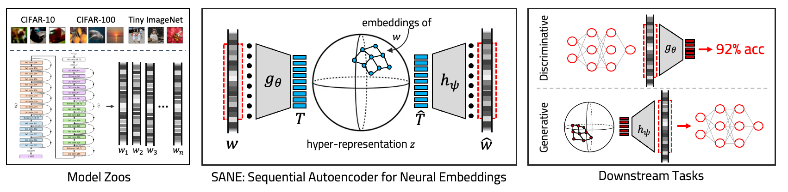
Figure 2: Given model zoos trained on different classification tasks, we extract and sequentialize the model weights. SANE trains hyper-representations on weights subsequences, i.e., individual layers. SANE can be used for multiple downstream tasks, either using the encoder for discriminative tasks such as the prediction of model accuracy, or the decoder for generative tasks such as sampling of new models.
图 2：给定在不同分类任务上训练的模型库，我们提取模型权重并将其序列化。SANE 在权重子序列（即各个层）上训练超表征。SANE 可用于多种下游任务，既可利用编码器执行模型准确率预测等判别式任务，也可利用解码器执行新模型采样等生成式任务。
In the generative context, methods have been proposed to generate model weights using (Graph) HyperNetworks (Ha et al., 2016; Zhang et al., 2019; Knyazev et al., 2021), Bayesian HyperNetworks (Deutsch, 2018), HyperGANs (Ratzlaff & Fuxin, 2019), and HyperTransformers (Zhmoginov et al., 2022). These approaches have been used for tasks such as neural architecture search, model compression, ensembling, transfer learning, and meta-learning. They have in common that they derive their learning signal from the underlying (typically image) dataset. In contrast to these methods, so-called hyper-representations (Schürholt et al., 2022a) learn a lower-dimensional representation directly from the weight space without the need to have access to data, e.g., the image dataset, to sample unseen NN models from that latent representation.
在生成式情境下，已有研究提出利用 (Graph) HyperNetworks (Ha et al., 2016; Zhang et al., 2019; Knyazev et al., 2021)、Bayesian HyperNetworks (Deutsch, 2018)、HyperGANs (Ratzlaff & Fuxin, 2019) 和 HyperTransformers (Zhmoginov et al., 2022) 生成模型权重的方法。这些方法已被用于神经架构搜索、模型压缩、集成、迁移学习和元学习等任务。它们的共同点是均从底层数据集（通常为图像数据集）中获取学习信号。与这些方法相比，所谓的超表征 (Schürholt et al., 2022a) 直接从权重空间中学习低维表征，无需访问图像数据集等数据，即可从该潜在表征中采样未见过的 NN 模型。
In this paper, we present Sequential Autoencoder for Neural Embeddings (SANE ), an approach to learn task-agnostic representations of NN weight spaces capable of embedding individual NN models into a latent space to perform the above-mentioned discriminative or generative downstream tasks. Our approach builds upon the idea of hyper-representations (Schürholt et al., 2021; Schürholt et al., 2022a), which learn a lower-dimensional representation $z$ from a population of NN models. This is accomplished by auto-encoding their flattened weight vectors $w_{i}$ through a transformer architecture, with the bottleneck acting as a lower-dimensional embedding $z_{i}$ of each NN model. While the hyper-representation method promises to be useful for discriminative and generative tasks, until now, separate hyper-representations had to be trained specifically for either discriminative or generative tasks. Additionally, existing approaches have a major shortcoming: the underlying encoder-decoder model has to embed the entire flattened weight vectors $w_{i}$ at once into the learned lower-dimensional representation $z$. This drastically limits the size of NNs that can be embedded. SANE addresses these limitations by decomposing the entire weight vector $w_{i}$ into layers or smaller subsets, and then sequentially processes them. Instead of encoding the entire NN model by one embedding, SANE encodes a potentially very large NN as multiple embeddings. The change from processing the entire flattened weight vector to subsets of weights is motivated by Martin & Mahoney (2019a); Martin & Mahoney (2021), who showed that global model information is preserved in the layer-wise components of NNs. An illustration of our approach can be found in Fig. 2.
本文提出 Sequential Autoencoder for Neural Embeddings（SANE），这是一种学习神经网络（NN）权重空间中与任务无关的表征的方法，能够将单个 NN 模型嵌入潜在空间，以执行上述判别式或生成式下游任务。我们的方法基于超表征的思想 (Schürholt et al., 2021; Schürholt et al., 2022a)，即从一组 NN 模型中学习低维表征 $z$。具体而言，通过 Transformer 架构对这些模型展平后的权重向量 $w_{i}$ 进行自编码，其中瓶颈作为每个 NN 模型的低维嵌入 $z_{i}$。尽管超表征方法有望应用于判别式和生成式任务，但迄今为止，仍必须分别针对判别式或生成式任务专门训练不同的超表征。此外，现有方法存在一个主要缺陷：底层编码器–解码器模型必须将完整的展平权重向量 $w_{i}$ 一次性嵌入所学习的低维表征 $z$ 中。这极大地限制了可嵌入的 NN 的规模。SANE 通过将完整权重向量 $w_{i}$ 分解为各层或更小的子集，再依次对其进行处理，从而解决这些局限。SANE 将规模可能非常大的 NN 编码为多个嵌入，而非用单个嵌入编码整个 NN 模型。从处理完整的展平权重向量转向处理权重子集，这一改变受到 Martin & Mahoney (2019a); Martin & Mahoney (2021) 的启发，他们表明，NN 的逐层组成部分保留了模型的全局信息。我们方法的示意图见图 2。
To evaluate SANE , we analyze how NN embeddings encoded by SANE behave in comparison to Martin & Mahoney (2019a); Martin & Mahoney (2021) quality measures. We show that some of these weight matrix quality metrics show similar characteristics as the embeddings produced by SANE . This holds not only for held-out NN models of the model zoo used for training SANE but also for NN models of out-of-distribution model zoos with different architectures and training data. Further, we demonstrate that SANE can learn hyper-representations of much larger NN models, and so it makes them applicable to real-world problems. In particular, the models in the ResNet model zoo used for training are three orders of magnitudes larger than all model zoos used for hyper-representation learning in previous works. While previous hyper-representation learning methods were structurally constrained to encode the entire NN model at once, SANE is scalable by applying its sequential approach to encode layers or subsets of weights into hyper-representation embeddings. While we demonstrate scaling up to ResNet-101 models, SANE is not fundamentally limited to that size. Finally, we evaluate SANE on both discriminative and generative downstream tasks. For discriminate tasks, we evaluate on six model zoos by linear-probing for properties of the underlying NN models. For generative tasks, we evaluate on seven model zoos by sampling targeted model weights for initialization and transfer learning.
为评估 SANE，我们分析了 SANE 编码得到的 NN 嵌入相对于 Martin & Mahoney (2019a); Martin & Mahoney (2021) 所提出的质量度量的表现。我们表明，其中一些权重矩阵质量指标呈现出与 SANE 生成的嵌入相似的特征。这不仅适用于训练 SANE 所用模型库中留出的 NN 模型，也适用于具有不同架构和训练数据的分布外模型库中的 NN 模型。此外，我们证明，SANE 能够学习规模大得多的 NN 模型的超表征，从而使其适用于现实问题。具体而言，用于训练的 ResNet 模型库中的模型，其规模比以往研究中用于超表征学习的所有模型库中的模型大三个数量级。以往的超表征学习方法在结构上受到限制，必须一次性编码整个 NN 模型，而 SANE 通过采用顺序处理方式，将各层或权重子集编码为超表征嵌入，从而具备可扩展性。尽管我们展示了扩展至 ResNet-101 模型的结果，但 SANE 在根本上并不受限于这一规模。最后，我们在判别式和生成式下游任务上评估 SANE。对于判别式任务，我们在六个模型库上，通过线性探测评估底层 NN 模型的属性。对于生成式任务，我们在七个模型库上，通过采样目标模型权重进行初始化和迁移学习来开展评估。
We provide an aggregated overview of our results in Fig. 1. On very small CNN models (evaluated on MNIST, SVHN, CIFAR-10, and STL, which we include for comparison with prior work), SANE performs as well as previous state-of-the-art (SOTA) in discriminative tasks. In generative downstream tasks, SANE outperforms SOTA by 25% in accuracy for initialization on the same task and 17% in accuracy for finetuning to new tasks. On larger models such as ResNets (evaluated on CIFAR-10, CIFAR-100, Tiny-ImageNet, which were beyond the capabilities of prior work), we show results comparable to baselines for discriminative downstream tasks, and we report outperformance to baselines for generative downstream tasks by 31% for initialization and 28% for finetuning to new tasks. Additionally, we show that SANE can sample targeted models by prompting with different architectures than it used for training. These sampled models can outperform models trained from scratch on the prompted architecture. Code is available at github.com/HSG-AIML/SANE.
我们在图 1 中汇总展示了结果。对于规模很小的 CNN 模型（在 MNIST、SVHN、CIFAR-10 和 STL 上进行评估，纳入这些模型是为了与以往工作进行比较），SANE 在判别式任务上的表现与此前最先进的方法（SOTA）相当。在生成式下游任务中，对于同一任务上的初始化，SANE 的准确率比 SOTA 高 25%；对于面向新任务的微调，准确率高 17%。对于 ResNets 等规模更大的模型（在 CIFAR-10、CIFAR-100、Tiny-ImageNet 上进行评估，这些模型超出了以往工作的处理能力），我们展示了在判别式下游任务上与基线相当的结果，并报告了在生成式下游任务上优于基线的结果：初始化的准确率提高 31%，面向新任务的微调准确率提高 28%。此外，我们表明，通过使用不同于训练时所用架构的架构作为提示，SANE 能够采样目标模型。这些采样得到的模型能够优于在所提示架构上从头训练的模型。代码可在 github.com/HSG-AIML/SANE 获取。
2 Methods2 方法
Hyper-representations learn an encoder-decoder model on the weights of NNs (Schürholt et al., 2021):
超表征在 NN 的权重上学习编码器–解码器模型 (Schürholt et al., 2021)：
where $g_{\theta}$ is the encoder which maps the flattened weights $\mathbf{W}$ to embeddings $\mathbf{z}$, and $h_{\psi}$ decodes back to reconstructed weights $\mathbf{\widehat{W}}$. Even though previous work realized both encoder and decoder with transformer backbones, the weight vector had to be of fixed size, and models are represented in a global embedding space (Schürholt et al., 2021; Schürholt et al., 2022a). Hyper-representations are trained with a reconstruction loss $\mathcal{L}_{rec}=\|\mathbf{W}-\mathbf{\widehat{W}}\|_{2}^{2}$ and contrastive guidance loss $\mathcal{L}_{c}=NTXent(p_{\phi}(\mathbf{z_{i}}),p_{\phi}(\mathbf{z_{j}}))$, where $p_{\phi}$ is a projection head. Schürholt et al. (2021) proposed weight permutation, noise, and masking as augmentations to generate views $i,j$ of the same model.
其中，$g_{\theta}$ 是编码器，将展平后的权重 $\mathbf{W}$ 映射为嵌入 $\mathbf{z}$，$h_{\psi}$ 则将其解码为重构权重 $\mathbf{\widehat{W}}$。尽管先前工作使用 Transformer 骨干网络实现了编码器和解码器，但权重向量的大小必须固定，且模型均在全局嵌入空间中表示 (Schürholt et al., 2021; Schürholt et al., 2022a)。超表征使用重构损失 $\mathcal{L}_{rec}=\|\mathbf{W}-\mathbf{\widehat{W}}\|_{2}^{2}$ 和对比引导损失 $\mathcal{L}_{c}=NTXent(p_{\phi}(\mathbf{z_{i}}),p_{\phi}(\mathbf{z_{j}}))$ 进行训练，其中 $p_{\phi}$ 为投影头。Schürholt et al. (2021) 提出使用权重置换、噪声和掩码作为数据增强方式，以生成同一模型的视图 $i,j$。
Existing hyper-representation methods have two major limitations: i) using the full weight vector to compute global model embeddings becomes infeasible for larger models; and ii) they can only embed models that share the architecture with the original model zoo. Our SANE method addresses both of these limitations. To make models more digestible for pretraining and inference, we propose to express models as sequences of token vectors. To address i), SANE learns per-token embeddings, which are trained on subsequences of the full base model sequence. This way, the memory and compute load are decoupled from the base model size. By decoupling the tokenization from the representation learning, we also address ii). The models in the model zoo set can have varying architectures, as long as they are expressed as a sequence with the same token-vector size. The transformer backbone and per-token embeddings also allow changes to the length of the sequence during or after training. Below, we provide technical details on SANE . We first provide details on pretraining SANE , computing model embeddings, and sampling models; and we then introduce additional aligning, haloing, and bn-conditioning methods to stabilize training and inference.
现有超表征方法存在两个主要局限：i) 对于较大的模型，使用完整权重向量计算全局模型嵌入变得不可行；ii) 这些方法只能对与原始模型库具有相同架构的模型进行嵌入。我们提出的 SANE 方法解决了这两个局限。为了使模型更便于预训练和推理处理，我们提出将模型表示为词元向量序列。针对 i)，SANE 学习每个词元的嵌入，并在完整基础模型序列的子序列上进行训练。这样，内存和计算负载便与基础模型的大小解耦。通过将词元化与表征学习解耦，我们也解决了 ii)。模型库集合中的模型可以具有不同架构，只要它们被表示为词元向量大小相同的序列即可。Transformer 骨干网络和逐词元嵌入还允许在训练期间或训练结束后改变序列长度。下文将介绍 SANE 的技术细节。我们首先详细介绍 SANE 的预训练、模型嵌入的计算以及模型采样，随后介绍额外的对齐、晕区扩展和 bn 条件化方法，以稳定训练和推理。
SANE : Sequential Autoencoder for Neural Embeddings To tokenize weights, we reshape the weights $\mathbf{W}_{raw}\in\mathbb{R}^{c_{out}\times c_{1}\times\cdots\times c_{in}}$ to 2d matrices $\mathbf{W}\in\mathbb{R}^{c_{out}\times c_{r}}$, where $c_{out}$ are the outgoing channels, and where $c_{r}$ the remaining, flattened dimensions. We then slice the weights row-wise, along the outgoing channel. Using global token size $d_{t}$, we split the slices into multiple parts if $c_{r}>d_{t}$ and zero-pad to fill up to $d_{t}$. For weights $\mathbf{W}_{l}$ of layer $l$, this gives us tokens $\mathbf{T}_{l}\in\mathbb{R}^{n_{l}\times d_{t}}$, where $n_{l}=c_{out,l}\,\mbox{ceil}(\frac{c_{r}}{d_{t}})$. Since all tokens $\mathbf{T}_{l}$ share the same token size, the tokens of layer $l=1,...,L$ can be concatenated to get the model token sequence $\mathbf{T}\in\mathbb{R}^{N\times d_{t}}$. To indicate the position of a token, we use a 3-dimensional position $\mathbf{P}_{n}=[n,l,k]$, where $n\in[1,N]$ indicates the global position in the sequence, $l\in[1,L]$ indicate the layer index, and $k\in[1,K(l)]$ is the position of the token within the layer.
SANE ：用于神经嵌入的序列自编码器 为了将权重词元化，我们将权重 $\mathbf{W}_{raw}\in\mathbb{R}^{c_{out}\times c_{1}\times\cdots\times c_{in}}$ 重塑为二维矩阵 $\mathbf{W}\in\mathbb{R}^{c_{out}\times c_{r}}$，其中 $c_{out}$ 为输出通道数，$c_{r}$ 为其余维度展平后的大小。随后，我们沿输出通道对权重逐行切片。采用全局词元大小 $d_{t}$，当 $c_{r}>d_{t}$ 时，我们将切片拆分为多个部分，并通过补零使其大小达到 $d_{t}$。对于层 $l$ 的权重 $\mathbf{W}_{l}$，由此得到词元 $\mathbf{T}_{l}\in\mathbb{R}^{n_{l}\times d_{t}}$，其中 $n_{l}=c_{out,l}\,\mbox{ceil}(\frac{c_{r}}{d_{t}})$。由于所有词元 $\mathbf{T}_{l}$ 的大小均相同，因此可以将层 $l=1,...,L$ 的词元拼接起来，得到模型词元序列 $\mathbf{T}\in\mathbb{R}^{N\times d_{t}}$。为了指示词元的位置，我们采用三维位置 $\mathbf{P}_{n}=[n,l,k]$，其中 $n\in[1,N]$ 表示其在序列中的全局位置，$l\in[1,L]$ 表示层索引，$k\in[1,K(l)]$ 表示词元在层内的位置。
Out of the full token sequence $\mathbf{T}$ and positions $\mathbf{P}\in\mathbb{N}^{N\times 3}$, we take a random consecutive sub-sequence $\mathbf{T}_{s,n}=\mathbf{T}_{n,...,n+ws}$ with positions $\mathbf{P}_{s,n}=\mathbf{P}_{n,...,n+ws}$ of length $ws$. We call these sub-sequences windows and the length of the sub-sequence the window size $ws$.
从完整词元序列 $\mathbf{T}$ 及其位置 $\mathbf{P}\in\mathbb{N}^{N\times 3}$ 中，我们随机选取一个长度为 $ws$ 的连续子序列 $\mathbf{T}_{s,n}=\mathbf{T}_{n,...,n+ws}$，其位置为 $\mathbf{P}_{s,n}=\mathbf{P}_{n,...,n+ws}$。我们将这些子序列称为窗口，将子序列的长度称为窗口大小 $ws$。
For SANE on windows of tokens, we extend Eqs. 1 and 2 to encode and decode token windows as
对于作用于词元窗口的 SANE，我们将式 1 和式 2 扩展为如下形式，以对词元窗口进行编码和解码：
where $\mathbf{z}_{s,n}\in\mathbb{R}^{ws\times d_{z}}$ is the per-token latent representation of the window. In contrast to hyper-representations Eqs. 1 and 2 which operate on the full flattened weights of a model, SANE encodes sub-sequences of tokenized models. For simplicity, we apply linear mapping to and from the bottleneck, to reduce tokens from $d_{t}$ to $d_{z}$.
其中，$\mathbf{z}_{s,n}\in\mathbb{R}^{ws\times d_{z}}$ 为窗口的逐词元潜在表征。与式 1 和式 2 中作用于模型完整展平权重的超表征不同，SANE 对词元化模型的子序列进行编码。为简便起见，我们在进入和离开瓶颈时均采用线性映射，将词元维度从 $d_{t}$ 降至 $d_{z}$。
We adapt the composite training loss of hyper-representations, $\mathcal{L}=(1-\gamma)\mathcal{L}_{rec}+\gamma\mathcal{L}_{c}$, for sequences as:
我们将超表征的复合训练损失 $\mathcal{L}=(1-\gamma)\mathcal{L}_{rec}+\gamma\mathcal{L}_{c}$ 调整为适用于序列的形式，如下所示：
Here, the mask $\mathbf{M}_{s,n}$ indicates signal with $1$ and padding with $0$, to ensure that the loss is only computed on actual weights. The contrastive guidance loss uses the augmented views $i,j$ and projection head $p_{\phi}$.
这里，掩码 $\mathbf{M}_{s,n}$ 用 $1$ 表示信号，用 $0$ 表示填充，以确保仅在实际权重上计算损失。对比引导损失使用增强视图 $i,j$ 和投影头 $p_{\phi}$。
The pretraining procedure is detailed in Algorithm 1. We preprocess model weights by standardizing weights per layer and aligning all models to a reference model; see Model Alignment below. As in previous work (Schürholt et al., 2021; Peebles et al., 2022), the encoder and decoder are realized as transformer blocks. Training on the full sequence would memory-limit the base-model size by its sequence length.
算法 1 详细介绍了预训练过程。我们通过逐层标准化权重并将所有模型对齐到一个参考模型来对模型权重进行预处理；参见下文的模型对齐。与先前工作 (Schürholt et al., 2021; Peebles et al., 2022) 一样，编码器和解码器均采用 Transformer 块实现。在完整序列上训练时，序列长度所带来的内存需求会限制基础模型的大小。
Algorithm 1 SANE pretraining
算法 1 SANE 预训练
Input: population of models
i: standardize models weights
ii: align models to one common reference model
iii: tokenize models to tokens 𝐓\mathbf{T}, positions 𝐏\mathbf{P}, masks 𝐌\mathbf{M}
iv: draw k windows per model: 𝐓s,n\mathbf{T}_{s,n}, 𝐏s,n\mathbf{P}_{s,n}, 𝐌s,n\mathbf{M}_{s,n}
v: train on ℒtrain\mathcal{L}_{train} until convergence of ℒval\mathcal{L}_{val}Training the encoder and decoder on windows instead of the full model sequence decouples the memory requirement from the base model’s full sequence length. The window size can be used to balance GPU memory load and the amount of context information. Notably, since we disentangle the tokenization from the representation learning model, SANE also allows us to embed sequences of models with varying architectures, as long as their token size is the same. To prevent potential overfitting to specific window positions, we propose to sample windows from each model sequence multiple times randomly.
在窗口上而非完整的模型序列上训练编码器和解码器，可使内存需求与基础模型的完整序列长度解耦。窗口大小可用于平衡 GPU 内存负载与上下文信息量。值得注意的是，由于我们将词元化与表征学习模型分离，SANE 还允许我们嵌入具有不同架构的模型序列，只要它们的词元大小相同。为防止对特定窗口位置产生潜在的过拟合，我们提出从每个模型序列中多次随机采样窗口。
Computing SANE Model Embeddings. SANE can be used to analyze models in embedding space, e.g., by using embeddings as features to predict properties such as accuracy or to identify other model quality metrics. In contrast to hyper-representations, SANE can embed different model sizes and architectures in the same embedding space. To embed any model, we begin by preprocessing weights by standardizing per layer and aligning models to a pre-defined reference model (see Model Alignment below). Subsequently, the preprocessed models are tokenized as described above. For short model sequences, the embedding sequences can be directly computed as $\mathbf{z}=g_{\theta}(\mathbf{T},\mathbf{P})$. For larger models, the token sequences are too long to embed as one. We therefore employ haloing (see below) to encode the entire sequence as coherent subsequences. Algorithm 2 summarizes the embedding computation.
计算 SANE 模型嵌入。SANE 可用于在嵌入空间中分析模型，例如，将嵌入用作特征来预测准确率等属性，或识别其他模型质量指标。与超表征不同，SANE 可以将不同大小和架构的模型嵌入同一嵌入空间。为嵌入任意模型，我们首先对权重进行预处理，即逐层进行标准化，并将模型与预先定义的参考模型对齐（参见下文的模型对齐）。随后，按上述方式对预处理后的模型进行词元化。对于较短的模型序列，可以直接计算嵌入序列：$\mathbf{z}=g_{\theta}(\mathbf{T},\mathbf{P})$。对于较大的模型，词元序列过长，无法作为一个整体进行嵌入。因此，我们采用晕区处理（见下文），将整个序列编码为连贯的子序列。算法 2 概述了嵌入的计算过程。
Algorithm 2 SANE model embedding computation
算法 2 SANE 模型嵌入计算
Input: population of models
i: preprocessing: standardize and align model weights
ii: tokenize models: 𝐓\mathbf{T}, positions 𝐏\mathbf{P}, property yy
iii: split 𝐓\mathbf{T}, 𝐏\mathbf{P} to consecutive chunks 𝐓hs,n,𝐏hs,n\mathbf{T}_{hs,n},\mathbf{P}_{hs,n}
iv: compute embeddings 𝐳hs,n=gθ(𝐓hs,n,𝐏hs,n)\mathbf{z}_{hs,n}=g_{\theta}(\mathbf{T}_{hs,n},\mathbf{P}_{hs,n})
v: stitch model embeddings 𝐳\mathbf{z} together from chunks 𝐳hs,n\mathbf{z}_{hs,n}To compare different models in embedding space, we aggregate the sequences of token embeddings. To that end, we understand the token sequence of one model to form a surface in embedding space and choose to represent that surface by its center of gravity. That is, we take the mean of all tokens along the embedding dimension as $\mathbf{\bar{z}}=\frac{1}{N}\sum_{n=1}^{N}(\mathbf{z}_{n})$. That results in one vector in embedding space per model. Of course, one could use other aggregation methods with SANE .
为在嵌入空间中比较不同模型，我们对词元嵌入序列进行聚合。为此，我们将一个模型的词元序列视为在嵌入空间中形成的曲面，并选择用其重心来表示该曲面。也就是说，我们沿嵌入维度对所有词元取均值，即 $\mathbf{\bar{z}}=\frac{1}{N}\sum_{n=1}^{N}(\mathbf{z}_{n})$。这样，每个模型在嵌入空间中对应一个向量。当然，也可以在 SANE 中使用其他聚合方法。
Sampling Models with Few Prompt Examples. Sampling models from SANE promises to transfer knowledge from existing populations to new models with different architectures. Given pretrained encoders $g_{\theta}$ and decoder $h_{\psi}$, the challenge is to identify the distribution $\mathcal{P}$ in latent space which contains the targeted properties. To approximate that distribution, previous work used a large number of well-trained models (Peebles et al., 2022; Schürholt et al., 2022a). However, increasing the size of the sampled models makes generating a large number of high-performance models exceedingly expensive. Instead of using expensive high-performance models to model $\mathcal{P}$ directly, we propose to find a rough estimate of $\mathcal{P}$, sample broadly, and refine $\mathcal{P}$ using the signal from the sampled models. Using $E$ prompt examples $\mathbf{W}^{e}$ we compute the token sequence $\mathbf{T}^{e}$ and corresponding embedding sequence $\mathbf{z}^{e}=g_{\theta}(\mathbf{T}^{e},\mathbf{P})$. Following previous work, we model the distribution $\mathcal{P}$ with a Kernel Density Estimation (KDE) per token as $\mathcal{P}_{e\in E}(\mathbf{z}_{n}^{e})$ (Schürholt et al., 2022a). We then draw $k$ new token samples as:
利用少量提示样例采样模型。通过 SANE 采样模型有望将现有模型群体中的知识迁移至具有不同架构的新模型。给定预训练的编码器 $g_{\theta}$ 和解码器 $h_{\psi}$，挑战在于确定潜在空间中包含目标属性的分布 $\mathcal{P}$。为近似该分布，先前工作使用了大量训练充分的模型 (Peebles et al., 2022; Schürholt et al., 2022a)。然而，随着所采样模型的规模增大，生成大量高性能模型的成本会变得极其高昂。我们提出，先粗略估计 $\mathcal{P}$，进行广泛采样，再利用所采样模型提供的信号来改进 $\mathcal{P}$，以此替代使用成本高昂的高性能模型直接对 $\mathcal{P}$ 建模。利用 $E$ 个提示样例 $\mathbf{W}^{e}$，我们计算词元序列 $\mathbf{T}^{e}$ 及相应的嵌入序列 $\mathbf{z}^{e}=g_{\theta}(\mathbf{T}^{e},\mathbf{P})$。遵循先前工作，我们对每个词元采用核密度估计（KDE），将分布 $\mathcal{P}$ 建模为 $\mathcal{P}_{e\in E}(\mathbf{z}_{n}^{e})$ (Schürholt et al., 2022a)。随后，我们按如下方式抽取 $k$ 个新的词元样本：
We reconstruct the sampled embeddings to weight tokens $\mathbf{T}^{k}=h_{\psi}(\mathbf{z}^{k},\mathbf{P})$ and then weights $\mathbf{W}^{k}$. Sampling tokens can be done cheaply, decoding and evaluating the weights using some performance metric involves only forward passes and is likewise cheap. Therefore, one can draw a large amount of samples and keep only the top $m$ models, according to the performance metric. We call this method subsampling. The process can be refined iteratively, by re-using the embeddings $\mathbf{z}^{k}$ of the best models as new prompt examples, to adjust the sampling distribution to best fit the needs of the performance metric. We call this sampling method bootstrapped. By only requiring a rough version of $\mathcal{P}$ and refining with the target signal, our sampling strategy reduces requirements on prompt examples such that only very few and slightly trained prompt examples are necessary. The overall sampling method is outlined in Algorithm 3. It makes use of model alignment, haloing, and batch-norm conditioning which are detailed below. In addition to the compute efficiency, these sampling methods learn the distribution of targeted models in embedding space. Further, they are not bound to the distribution of prompt examples, but instead they can find the distribution that best satisfies the target performance metric, independent of the prompt examples.
我们将采样得到的嵌入重构为权重词元 $\mathbf{T}^{k}=h_{\psi}(\mathbf{z}^{k},\mathbf{P})$，再重构为权重 $\mathbf{W}^{k}$。词元采样的成本很低，而解码权重并使用某种性能指标对其进行评估仅涉及前向传播，因此成本同样很低。因此，可以抽取大量样本，并根据性能指标仅保留排名前 $m$ 的模型。我们将此方法称为子采样。通过将最佳模型的嵌入 $\mathbf{z}^{k}$ 重新用作新的提示样例，可以迭代改进这一过程，调整采样分布，使其最符合性能指标的要求。我们将这种采样方法称为自举采样。由于仅需粗略估计 $\mathcal{P}$，并利用目标信号加以改进，我们的采样策略降低了对提示样例的要求，只需极少量经过少量训练的提示样例。算法 3 概述了整体采样方法。该方法使用了模型对齐、晕区处理和批归一化条件化，下文将详细介绍这些方法。除了计算效率之外，这些采样方法还能学习目标模型在嵌入空间中的分布。此外，它们不受提示样例分布的限制，而是能够独立于提示样例，找到最符合目标性能指标的分布。
Algorithm 3 Sampling models with SANE
算法 3 使用 SANE 采样模型
Input: model prompt examples 𝐖e\mathbf{W}^{e}
i: tokenize prompt examples: tokens 𝐓e\mathbf{T}^{e}, positions 𝐏e\mathbf{P}^{e}
ii: embed prompt examples 𝐳e\mathbf{z}^{e} following Alg. 2
for iboot=1i_{boot}=1 to bootstrap iterations do
iii: draw kk samples 𝐳nk∼𝒫e∈E(𝐳ne)\mathbf{z}_{n}^{k}\sim\mathcal{P}_{e\in E}(\mathbf{z}_{n}^{e})
iv: decode to tokens 𝐓𝐤=hψ(𝐳k)\mathbf{T^{k}}=h_{\psi}(\mathbf{z}^{k})
v: apply batch-norm conditioning
vi: compute target metric and keep best mm models
if bootstrap iterations>1\;>1 then
vii: 𝐳e=𝐳kfork∈m\mathbf{z}^{e}=\mathbf{z}^{k}for\;k\in m
end if
end forGrowing sample model size poses several additional challenges, three of which we address with the following methods. We evaluate these methods in Appendix A.
增大采样模型的规模会带来若干额外挑战，我们通过以下方法解决其中的三个挑战。我们在附录 A 中评估这些方法。
Model Alignment. Symmetries in the weight space of NN complicate representation learning of the weights. The number of symmetries grows fast with model size (Bishop, 2006). To make representation learning easier, we reduced all training models to a unique, canonical basis of a reference model. With reference model $A$ we align model $B$ by finding the permutation $\pi=argmin_{\pi}\|\text{vec}(\Theta{(A)})-\text{vec}(\Theta(B))\|^{2}$, where $\Theta(A)$ are the parameters of model $A$ (Ainsworth et al., 2022). We fix the same reference model across all dataset splits and use the last epoch of each model to determine the permutation for that model.
模型对齐。NN 权重空间中的对称性使权重的表示学习变得复杂。对称性的数量随模型规模迅速增长 (Bishop, 2006)。为简化表示学习，我们将所有训练模型转换到参考模型的唯一规范基下。给定参考模型 $A$，我们通过寻找置换 $\pi=argmin_{\pi}\|\text{vec}(\Theta{(A)})-\text{vec}(\Theta(B))\|^{2}$ 来对齐模型 $B$，其中 $\Theta(A)$ 为模型 $A$ 的参数 (Ainsworth et al., 2022)。我们在所有数据集划分中固定使用同一个参考模型，并使用每个模型最后一个训练轮次的参数来确定该模型的置换。
Haloing. The sequential decomposition of SANE decouples the pretraining sequence length from downstream task sequence lengths. Since the memory load at inference is considerably lower, the sequences at inference can be longer. However, full model sequences may still not fit in memory and may have to be processed in slices. To ensure consistency between the slices, we add context around the content windows. With added context halo before and after the content window, we get $\mathbf{T}_{hs,n}=\mathbf{T}_{n-h,..,n,...,n+ws,n+ws+h}$. Similar to approaches in computer vision (Vaswani et al., 2021), this context halo is added for the pass through encoder and decoder, but disregarded after.
晕区扩展。SANE 的序列分解将预训练序列长度与下游任务的序列长度解耦。由于推理时的内存负载显著降低，推理时可以使用更长的序列。然而，完整的模型序列仍可能无法装入内存，因此可能需要分片处理。为确保各分片之间的一致性，我们在内容窗口周围添加上下文。在内容窗口前后添加上下文晕区后，得到 $\mathbf{T}_{hs,n}=\mathbf{T}_{n-h,..,n,...,n+ws,n+ws+h}$。与计算机视觉中的方法 (Vaswani et al., 2021) 类似，该上下文晕区在通过编码器和解码器时加入，但在此后被舍弃。
Batch-Norm Conditioning. In most current NN models, some parameters like batch-norm weights are updated during forward passes instead of with gradients. Since that makes them structurally different, we exclude these parameters from representation learning and sampling with SANE . Nonetheless, these parameters need to be instantiated for sampled models to work well. For model sampling methods, we therefore propose to condition batch-norm parameters by performing a few forward passes with some target data. Importantly, this process does not update the learned weights of the model. It serves to align the batch norm statistics with the model’s weights.
批归一化条件化。在当前大多数 NN 模型中，批归一化权重等一些参数在前向传播过程中更新，而非通过梯度更新。由于这使它们在结构上有所不同，我们在使用 SANE 进行表示学习和采样时排除这些参数。不过，为使采样得到的模型正常工作，仍需为这些参数赋值。因此，对于模型采样方法，我们提出使用一些目标数据进行数次前向传播，以对批归一化参数进行条件化。重要的是，这一过程不会更新模型已学习的权重。其作用是使批归一化统计量与模型权重相匹配。
3 Training SANE3 训练 SANE
We pretrain SANE following Alg. 1 on several populations of trained NN models, from the model zoo dataset (Schürholt et al., 2022c). We use zoos of small models to compare with previous work, as well as zoos containing larger ResNet-18 models. All zoos are split into training, validation, and test splits $70:15:15$.
我们按照算法 1，在模型库数据集 (Schürholt et al., 2022c) 中的多个已训练 NN 模型群体上预训练 SANE。我们使用小型模型库与先前工作进行比较，同时也使用包含较大 ResNet-18 模型的模型库。所有模型库均按 $70:15:15$ 的比例划分为训练集、验证集和测试集。
• Smaller CNN zoos. The MNIST and SVHN zoos contain LeNet-style models with 3 convolution and 2 dense layers and only $\sim 2.5k$ parameters. The slightly larger CIFAR-10 and STL-10 zoos use the same architecture with wider layers and $\sim 12k$ parameters.
• 较小的 CNN 模型库。MNIST 和 SVHN 模型库包含 LeNet 风格的模型，这些模型具有 3 个卷积层和 2 个全连接层，参数量仅为 $\sim 2.5k$。规模稍大的 CIFAR-10 和 STL-10 模型库采用相同的架构，但层宽更大，参数量为 $\sim 12k$。
• Larger ResNet zoos. We also use the CIFAR-10, CIFAR-100, and Tiny-Imagenet zoos containing ResNet-18 models (Schürholt et al., 2022c) with $\sim 12M$ parameters to evaluate scalability to large models.
• 较大的 ResNet 模型库。我们还使用 CIFAR-10、CIFAR-100 和 Tiny-Imagenet 模型库，其中包含参数量为 $\sim 12M$ 的 ResNet-18 模型 (Schürholt et al., 2022c)，以评估该方法扩展至大型模型的能力。
Pretraining. We train SANE using Alg. 1. As augmentations, we use noise and permutation. The permutation is computed relative to the aligned model. For contrastive learning, the aligned model serves as one view, and a permuted version as the second view.
预训练。我们使用算法 1 训练 SANE。我们采用噪声和置换作为数据增强方式。置换相对于对齐后的模型计算。对于对比学习，对齐后的模型作为一个视图，其置换版本作为第二个视图。
Implementation Details. To maintain diversity within each batch, we select only a single window from each model. Loading, preprocessing, and augmenting the entire sample, only to use ca. 1% of it, is infeasible. To address this, we leverage FFCV (Leclerc et al., 2023) to compile datasets consisting of sliced and permuted windows of models. Each model is super-sampled for approximately full coverage within the training set, considering the ratio of window length to sequence length. For the ResNet zoos, we include 140 models per zoo, a number that remains manageable in terms of memory and storage. We train for 50 epochs using a OneCycle learning rate scheduler (Smith & Topin, 2018). Seeds are recorded to ensure reproducibility. We build SANE in PyTorch (Paszke et al., 2019), using automatic mixed precision and flash attention (Dao et al., 2022) to enhance performance. We use ray.tune (Liaw et al., 2018) for hyperparameter optimization.
实现细节。为保持每个批次内的多样性，我们仅从每个模型中选取一个窗口。加载整个样本并对其进行预处理和增强，却只使用其中约 1%，这种做法不可行。为解决这一问题，我们利用 FFCV (Leclerc et al., 2023) 编译由模型分片并置换后的窗口组成的数据集。根据窗口长度与序列长度的比例，对每个模型进行超采样，以在训练集中实现近乎完整的覆盖。对于 ResNet 模型库，我们在每个模型库中纳入 140 个模型，这一数量在内存和存储方面仍处于可控范围内。我们使用 OneCycle 学习率调度器 (Smith & Topin, 2018) 训练 50 个轮次。我们记录随机种子以确保可复现性。我们使用 PyTorch (Paszke et al., 2019) 构建 SANE，并采用自动混合精度和 flash attention (Dao et al., 2022) 来提升性能。我们使用 ray.tune (Liaw et al., 2018) 进行超参数优化。
4 Embedding Analysis4 嵌入分析
In this section, we analyze the embeddings of SANE and compare to the weight-analysis methods WeightWatcher (WW) (Martin et al., 2021). We focus on three aspects: i) global relation between accuracy and embeddings; ii) the trend of embeddings over layer index, as in (Martin et al., 2021); and iii) the identification of training phases as in (Martin & Mahoney, 2019b; Martin & Mahoney, 2021).
本节分析 SANE 的嵌入，并与权重分析方法 WeightWatcher (WW) (Martin et al., 2021) 进行比较。我们重点关注三个方面：i) 准确率与嵌入之间的全局关系；ii) 嵌入随层索引变化的趋势，如 (Martin et al., 2021) 所示；以及 iii) 训练阶段的识别，如 (Martin & Mahoney, 2019b; Martin & Mahoney, 2021) 所示。
To analyze weights, we focus on two WW metrics which in previous work reveal model performance as well as internal model composition (correlation flow); the log spectral norm $\log(\|\mathbf{W}\|^{2}_{\infty})$ and weighted $\alpha$, the coefficient of the power law fitted to the empirical spectral density (Martin et al., 2021). These two metrics describe different aspects of the eigenvalue distribution. To get a similar signal on the internal dependency of weight matrices, we compute per-layer scalars $\hat{z}_{l}$ as the spread of the tokens of one layer in hyper-representation space, i.e., their standard deviation:
为分析权重，我们重点考察两个 WW 指标，已有研究表明，这两个指标能够揭示模型性能及模型的内部组成（相关性流）；它们分别是对数谱范数 $\log(\|\mathbf{W}\|^{2}_{\infty})$ 和加权 $\alpha$，后者为对经验谱密度拟合的幂律系数 (Martin et al., 2021)。这两个指标描述了特征值分布的不同方面。为获得关于权重矩阵内部依赖关系的类似信号，我们将逐层标量 $\hat{z}_{l}$ 计算为某一层的词元在超表示空间中的离散程度，即其标准差：
where $g$ is the hyper-rep encoder, $\textbf{z}^{t}_{m}$ are the stacked tokens $t$ of layer $m$, and $\textbf{W}^{t}_{m}$ is the weight-slice $t$ of layer $m$.
其中，$g$ 为超表示编码器，$\textbf{z}^{t}_{m}$ 为层 $m$ 中堆叠的词元 $t$，$\textbf{W}^{t}_{m}$ 为层 $m$ 的权重切片 $t$。
To compare WW metrics to SANE , we pretrain SANE on a Tiny-Imagenet ResNet-18 zoo and compute the two metrics on ResNets and VGGs of different sizes trained on ImageNet from pytorchcv (Sémery, 2024). On both ResNets in Figure 3, 9 and VGGs in Figure 8, the WW metrics and our embeddings show similar global trends. On ResNets, our embeddings and WW have low values at early layers and a sharp increase at the end. However, our embeddings add an additional step for intermediate layers, which may indicate that SANE is sensitive to a higher degree of variation in these layers which previous work found by comparing activations (Kornblith et al., 2019).
为将 WW 指标与 SANE 进行比较，我们在一个 Tiny-Imagenet ResNet-18 模型库上预训练 SANE，并对 pytorchcv (Sémery, 2024) 中在 ImageNet 上训练的不同规模的 ResNets 和 VGGs 计算这两个指标。在图 3、9 中的 ResNets 和图 8 中的 VGGs 上，WW 指标与我们的嵌入均呈现出相似的整体趋势。在 ResNets 上，我们的嵌入和 WW 在前部层中的取值较低，并在末端急剧升高。然而，我们的嵌入在中间层还出现了一个额外的阶跃，这可能表明 SANE 对这些层中更大程度的变异较为敏感，而先前的研究通过比较激活也发现了这种变异 (Kornblith et al., 2019)。
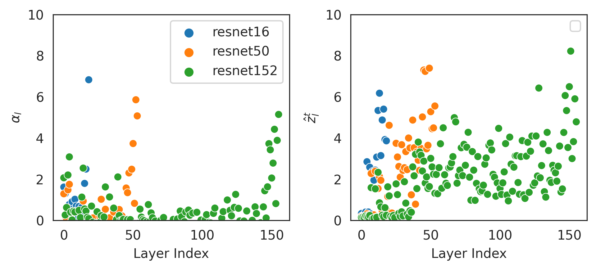
Figure 3: Comparison between WeightWatcher (WW) features (left) and SANE (right). Features over layer index for ResNets from pytorchcv of different sizes.
图 3：WeightWatcher（WW）特征（左）与 SANE（右）的比较。展示了 pytorchcv 中不同规模的 ResNets 的特征随层索引的变化。
In a second experiment, we aggregate the layer-wise embeddings $\hat{z}_{l}$ to evaluate relations to model accuracy in Figures 4, 10 and 11, similar to previous work (Martin et al., 2021). On models from pytorchcv and the Tiny-ImagNet model zoo from (Schürholt et al., 2022c), the WW features and SANE embeddings both show strong correlations to model accuracy. However, while the WW metrics are negatively correlated to accuracy, our embeddings are positively correlated to accuracy. The reason for that may lie in the additional ’step’ in Figure 3. That is, larger models with more layers generally have higher performance. As Figure 3 shows, more layers add very small values reducing the global average for WW metrics. For our embeddings, deeper models have more layers with higher $\hat{z}_{l}$ values, due to the afore-mentioned step. This increases the global model average with growing model size. Lastly, we compare the eigenvalue spectrum to embeddings. Previous work identified distinct shapes at different training phases or with varying training hyperparameters (Martin & Mahoney, 2019b; Martin & Mahoney, 2021). While we can replicate the distributions of the eigenvalues, the distributions of our embeddings only show the change from early phases of training to the heavy-tailed distribution; see Figure 7.
在第二个实验中，我们对逐层嵌入 $\hat{z}_{l}$ 进行聚合，以评估其与模型准确率的关系，结果见图 4、10 和 11，这与先前研究的做法类似 (Martin et al., 2021)。在 pytorchcv 中的模型以及来自 (Schürholt et al., 2022c) 的 Tiny-ImagNet 模型库上，WW 特征和 SANE 嵌入均与模型准确率呈现出较强的相关性。然而，WW 指标与准确率呈负相关，而我们的嵌入与准确率呈正相关。其原因可能在于图 3 中额外出现的“阶跃”。也就是说，层数更多、规模更大的模型通常具有更高的性能。如图 3 所示，对于 WW 指标，更多的层会引入取值很小的数值，从而降低全局平均值。对于我们的嵌入，由于前述阶跃，更深的模型具有更多 $\hat{z}_{l}$ 值较高的层。这使得模型的全局平均值随模型规模的增大而升高。最后，我们将特征值谱与嵌入进行比较。先前的研究发现，在不同训练阶段或采用不同训练超参数时，特征值谱呈现出不同的形状 (Martin & Mahoney, 2019b; Martin & Mahoney, 2021)。虽然我们能够复现特征值的分布，但我们的嵌入分布仅呈现出从训练早期阶段向重尾分布的变化；见图 7。
In summary, our embedding analysis indicates that SANE represents several aspects of model quality (globally and on a layer level) that have been established previously.
综上所述，我们的嵌入分析表明，SANE 在全局和层级层面表征了先前研究已确立的模型质量的多个方面。
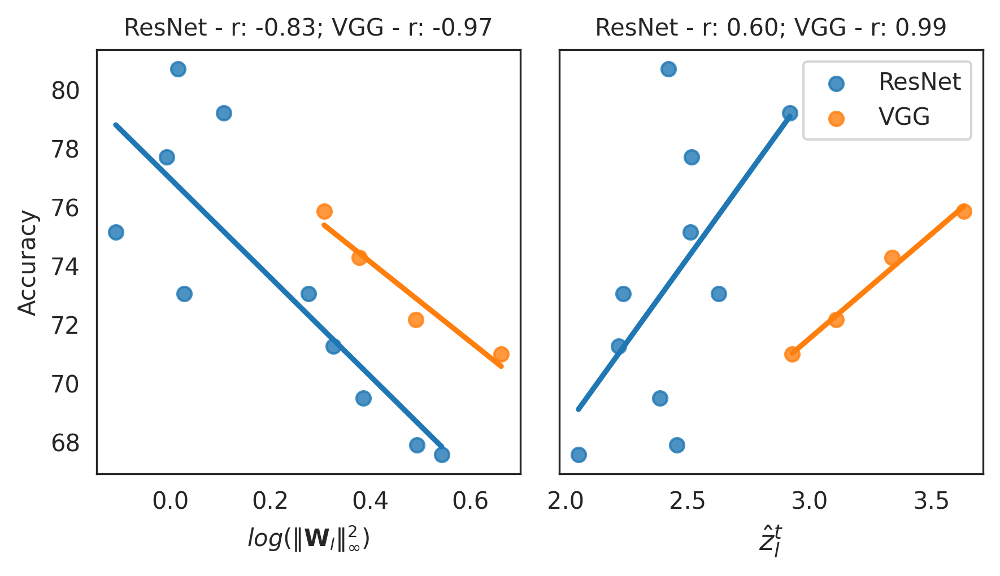
Figure 4: Comparison between WeightWatcher features (left) and SANE (right). Accuracy over model features for ResNets and VGGs from pytorchcv of different sizes. Although SANE is pretrained in a self-supervised fashion, it preserves the linear relation of a globally-aggregated embedding to model accuracy.
图 4：WeightWatcher 特征（左）与 SANE（右）的比较。展示了 pytorchcv 中不同规模的 ResNets 和 VGGs 的准确率随模型特征的变化。尽管 SANE 采用自监督方式进行预训练，它仍保留了全局聚合嵌入与模型准确率之间的线性关系。
5 Empirical Performance5 实验性能
In this section, we describe the general performance SANE .
本节介绍 SANE 的总体性能。
5.1 Predicting Model Properties5.1 预测模型属性
We evaluate SANE for discriminative downstream tasks as a proxy for encoded model qualities. Specifically, we investigate whether SANE matches the predictive performance of hyper-representations on small CNN models (Table 1) and whether similar performance can be achieved on ResNet-18 models (Table 2). To that end, we compute model embeddings $\mathbf{\bar{z}}$ as outlined in Alg. 2, and we compare against flattened weights $W$ and weight statistics $s(W)$. Following the experimental setup of (Eilertsen et al., 2020; Unterthiner et al., 2020; Schürholt et al., 2021), we compute embeddings using the three methods and linear probe for test accuracy (Acc), epoch (Ep), and generalization gap (Ggap). We again use trained models from the modelzoo repository (Schürholt et al., 2022c), with the same train, test, val splits as above.
我们在判别式下游任务上评估 SANE，以此作为其所编码的模型质量的间接衡量。具体而言，我们研究 SANE 能否在小型 CNN 模型上达到超表示的预测性能（表 1），以及在 ResNet-18 模型上能否实现类似的性能（表 2）。为此，我们按照算法 2 所述计算模型嵌入 $\mathbf{\bar{z}}$，并与展平后的权重 $W$ 和权重统计量 $s(W)$ 进行比较。遵循 (Eilertsen et al., 2020; Unterthiner et al., 2020; Schürholt et al., 2021) 的实验设置，我们使用这三种方法计算嵌入，并通过线性探测预测测试准确率（Acc）、训练轮次（Ep）和泛化差距（Ggap）。我们再次使用 modelzoo 仓库 (Schürholt et al., 2022c) 中已训练的模型，并采用与上文相同的训练集、测试集和验证集划分。
Table 1: Property prediction on populations of small CNNs used in previous work (Schürholt et al., 2021). We report the regression $R^{2}$ on the test set prediction test accuracy Acc., epoch Ep. and generalization gap Ggap for linear probing with model weights $W$, model weights statistics $s(W)$ or SANE embeddings as inputs.
表 1：对先前研究 (Schürholt et al., 2021) 中使用的小型 CNN 群体进行属性预测。我们以模型权重 $W$、模型权重统计量 $s(W)$ 或 SANE 嵌入作为线性探测的输入，报告在测试集上预测测试准确率 Acc.、训练轮次 Ep. 和泛化差距 Ggap 的回归 $R^{2}$。
| MNIST | SVHN | CIFAR-10 (CNN) | |||||||||
| W | s(W) | SANE | W | s(W) | SANE | W | s(W) | SANE | |||
| Acc. | 0.965 | 0.987 | 0.978 | 0.910 | 0.985 | 0.991 | -7.580 | 0.965 | 0.885 | ||
| Ep. | 0.953 | 0.974 | 0.958 | 0.833 | 0.953 | 0.930 | 0.636 | 0.923 | 0.771 | ||
| Ggap | 0.246 | 0.393 | 0.402 | 0.479 | 0.711 | 0.760 | 0.324 | 0.909 | 0.772 |
SANE matches baselines on small models. The results of linear probing on small CNNs in Tables 1 and 9 confirm the performance of $W$ (low) and $s(W)$ (very high) of previous work. SANE embeddings show comparably high performance to the $s(W)$ and previous hyper-representations. Additional experiments in Appendix D.1 compare to previous work and confirm these findings. Sequential decomposition and representation learning as well as using the center of gravity does not significantly reduce the information contained in SANE embeddings.
SANE 在小型模型上的表现与基线相当。表 1 和表 9 中针对小型 CNN 的线性探测结果证实了先前工作中 $W$ 的性能较低、$s(W)$ 的性能很高的结论。SANE 嵌入表现出与 $s(W)$ 及先前的超表征相当的高性能。附录 D.1 中的补充实验与先前工作进行了比较，并证实了这些发现。序列分解与表征学习以及重心的使用并未显著减少 SANE 嵌入所包含的信息。
Table 2: Property prediction on ResNet-18 model zoos of (Schürholt et al., 2022c). We report the regression $R^{2}$ on the test set prediction test accuracy Acc., epoch Ep. and generalization gap Ggap for linear probing with model weights statistics $s(W)$ or SANE embeddings as inputs.
表 2：在 (Schürholt et al., 2022c) 的 ResNet-18 模型库上进行属性预测。我们报告了以模型权重统计量 $s(W)$ 或 SANE 嵌入为输入进行线性探测时，预测测试准确率 Acc.、训练轮次 Ep. 和泛化差距 Ggap 在测试集上的回归 $R^{2}$。
| CIFAR-10 | CIFAR-100 | Tiny-Imagenet | ||||||
| s(W) | SANE | s(W) | SANE | s(W) | SANE | |||
| Acc. | 0.880 | 0.879 | 0.923 | 0.922 | 0.802 | 0.795 | ||
| Ep. | 0.999 | 0.999 | 0.999 | 0.992 | 0.999 | 0.980 | ||
| Ggap | 0.490 | 0.512 | 0.882 | 0.879 | 0.704 | 0.699 |
SANE performance prediction scales to ResNets. Both $s(W)$ and SANE embeddings show similarly high performance on populations of ResNet-18s; see Table 2. On ResNet-18s, using the full weights $W$ for linear probing is infeasible due to the size of the flattened weights. SANE matches the high performance of $s(W)$. The results show that sequential hyper-representations are capable of scaling to ResNet-18 models. Further, the aggregation even of long sequences (ca. 50k tokens) embedded in SANE preserves meaningful information on model performance, which indicates the feasibility of applications like model diagnostics or targeted sampling.
SANE 的性能预测可扩展至 ResNet。$s(W)$ 和 SANE 嵌入在 ResNet-18 模型群体上均表现出相近的高性能，见表 2。对于 ResNet-18，由于展平后的权重规模过大，使用完整权重 $W$ 进行线性探测并不可行。SANE 达到了与 $s(W)$ 相当的高性能。结果表明，序列超表征能够扩展至 ResNet-18 模型。此外，即使对嵌入到 SANE 中的长序列（约 50k 个词元）进行聚合，也能保留有关模型性能的有意义信息，这表明模型诊断或定向采样等应用具有可行性。
5.2 Generating Models5.2 生成模型
We evaluate SANE for the generative downstream tasks i.e., for sampling model weights. We generate weights following Alg. 3 and test them in fine-tuning, transfer learning, and how they generalize to new tasks and architectures. In the following paragraphs, we begin with experiments on small CNN models from the modelzoo repository to compare with previous work (Tables 3, 13). Subsequently, we evaluate SANE for sampling ResNet-18 models for finetuning and transfer learning (Tables 4, 14). Lastly, we evaluate sampling for new tasks and new architectures using only few prompt examples (Figure 5 and Tables 5, 15, 16, 17).
我们在生成式下游任务中评估 SANE，即对模型权重进行采样。我们按照算法 3 生成权重，并在微调、迁移学习以及向新任务和新架构的泛化方面对其进行测试。在以下段落中，我们首先在 modelzoo 仓库中的小型 CNN 模型上开展实验，以便与先前工作进行比较（表 3、13）。随后，我们评估使用 SANE 采样 ResNet-18 模型以进行微调和迁移学习的效果（表 4、14）。最后，我们评估仅使用少量提示示例为新任务和新架构进行采样的效果（图 5 和表 5、15、16、17）。
We pretrain SANE on models from the first half of the training epochs with Alg. 1, and keep the remaining epochs (26-50) as holdout to compare against, following the experimental setup of (Schürholt et al., 2022a). We sample using Alg. 3 and use models from the last epoch in the pretraining set (epoch 25) as prompt examples. We denote subsampling with SANE SUB and iteratively updating the distribution $\mathcal{P}$ as SANE BOOT. To evaluate the impact of the sampling method, we also combine SANE with the $KDE30$ sampling approach that uses high-quality prompt examples (Schürholt et al., 2022a). We further evaluate sampling without prompt examples by bootstrapping off of a Gaussian prior $\mathcal{P}$, denoted as SANE GAUSS. We compare against training from scratch, as well as fine-tuning from the prompt examples.
遵循 (Schürholt et al., 2022a) 的实验设置，我们使用算法 1，在训练前一半轮次的模型上预训练 SANE，并将其余轮次（26-50）的模型留出用于比较。我们使用算法 3 进行采样，并将预训练集最后一个轮次（第 25 轮）的模型用作提示示例。我们将子采样记为 SANE SUB，将迭代更新分布 $\mathcal{P}$ 的方法记为 SANE BOOT。为评估采样方法的影响，我们还将 SANE 与使用高质量提示示例的 $KDE30$ 采样方法相结合 (Schürholt et al., 2022a)。我们进一步评估从高斯先验 $\mathcal{P}$ 出发进行自举、无需提示示例的采样方法，将其记为 SANE GAUSS。我们将这些方法与从头训练以及从提示示例开始微调进行比较。
Table 3: Model generation on CNN model populations fine-tuned on the same task. We compare training from scratch with $S_{KDE30}$ from (Schürholt et al., 2022a), SANE combined with the $KDE30$ sampling method, and our SANE subsampled. Each of the sampled populations is fine-tuned over 25 epochs.
表 3：在同一任务上进行微调的 CNN 模型群体的模型生成。我们将从头训练与 (Schürholt et al., 2022a) 中的 $S_{KDE30}$、结合 $KDE30$ 采样方法的 SANE，以及我们的 SANE 子采样方法进行比较。每个采样得到的模型群体均微调 25 轮。
| Ep. | Method 方法 | MNIST | SVHN | CIFAR-10 | STL |
| 0 | tr. fr. scratch 从头训练 | $\sim$10 /% | $\sim$10 /% | $\sim$10 /% | $\sim$10 /% |
| $S_{KDE30}$ | 68.6$\pm$6.7 | 54.5$\pm$5.9 | n/a | n/a | |
| SANE KDE30 | 84.8$\pm$0.8 | 70.7$\pm$1.4 | 56.3$\pm$0.5 | 39.2$\pm$0.8 | |
| SANE SUB | 86.7$\pm$0.8 | 72.3$\pm$1.6 | 57.9$\pm$0.2 | 43.5$\pm$1.0 | |
| SANE GAUSS | 20.8$\pm$0.1 | 21.6$\pm$0.5 | 19.3$\pm$0.2 | 17.5$\pm$1.5 | |
| 1 | tr. fr. scratch 从头训练 | 20.6$\pm$1.6 | 19.4$\pm$0.6 | 37.2$\pm$1.4 | 21.3$\pm$1.6 |
| $S_{KDE30}$ | 83.7$\pm$1.3 | 69.9$\pm$1.6 | n/a | n/a | |
| SANE KDE30 | 85.5$\pm$0.8 | 71.3$\pm$1.4 | 58.2$\pm$0.2 | 43.5$\pm$0.7 | |
| SANE SUB | 87.5$\pm$0.6 | 73.3$\pm$1.4 | 59.1$\pm$0.3 | 44.3$\pm$1.0 | |
| SANE GAUSS | 61.3$\pm$3.1 | 24.1$\pm$4.4 | 27.2$\pm$0.3 | 22.4$\pm$1.0 | |
| 5 | tr. fr. scratch 从头训练 | 36.7$\pm$5.2 | 23.5$\pm$4.7 | 48.5$\pm$1.0 | 31.6$\pm$4.2 |
| $S_{KDE30}$ | 92.4$\pm$0.7 | 57.3$\pm$12.4 | n/a | n/a | |
| SANE KDE30 | 87.5$\pm$0.7 | 72.2$\pm$1.2 | 58.8$\pm$0.4 | 45.2$\pm$0.6 | |
| SANE SUB | 89.0$\pm$0.4 | 73.6$\pm$1.5 | 59.6$\pm$0.3 | 45.3$\pm$0.9 | |
| SANE GAUSS | 83.4$\pm$0.8 | 35.6$\pm$8.9 | 43.3$\pm$0.3 | 34.2$\pm$0.7 | |
| 25 | tr. fr. scratch 从头训练 | 83.3$\pm$2.6 | 66.7$\pm$8.5 | 57.2$\pm$0.8 | 44.0$\pm$1.0 |
| $S_{KDE30}$ | 93.0$\pm$0.7 | 74.2$\pm$1.4 | n/a | n/a | |
| SANE KDE30 | 92.0$\pm$0.3 | 74.7$\pm$0.8 | 60.2$\pm$0.6 | 48.4$\pm$0.5 | |
| SANE SUB | 92.3$\pm$0.4 | 75.1$\pm$1.0 | 61.2$\pm$0.1 | 48.0$\pm$0.4 | |
| SANE GAUSS | 94.2$\pm$0.4 | 54.2$\pm$17.6 | 52.2$\pm$0.6 | 43.5$\pm$0.5 | |
| 50 | tr. fr. scratch 从头训练 | 91.1$\pm$2.6 | 70.7$\pm$8.8 | 61.5$\pm$0.7 | 47.4$\pm$0.9 |
Sampling High-Performing CNNs Zero-Shot. We begin with finetuning and transfer learning experiments on small CNNs from the modelzoo dataset to validate that the sequential decomposition for pretraining and sampling does not hurt performance. The results of these experiments show dramatically improved performance zero-shot for fine-tuning and transfer learning over previous hyper-representations; see Tables 3 and 13. At epoch 0, SANE improves over previous hyper-representations $S_{KDE30}$ by almost 20%. The effect becomes smaller during fine-tuning. Nonetheless, SANE consistently outperforms training from scratch with a higher epoch budget, often by several percentage points. This demonstrates on small CNNs that sequential pretraining and sampling of SANE improves performance, particularly zero shot. This indicates the potential for scenarios with little labelled data.
零样本采样高性能 CNN。我们首先在 modelzoo 数据集中的小型 CNN 上开展微调和迁移学习实验，以验证用于预训练和采样的序列分解不会损害性能。这些实验的结果表明，在微调和迁移学习中，零样本性能相较于先前的超表征大幅提升，见表 3 和表 13。在第 0 轮，SANE 相较于先前的超表征 $S_{KDE30}$ 提升了近 20%。这一提升在微调过程中逐渐减小。尽管如此，SANE 始终优于采用更多训练轮次预算的从头训练，且优势通常达到数个百分点。这在小型 CNN 上表明，SANE 的序列预训练和采样能够提高性能，尤其是零样本性能。这说明其在标注数据较少的场景中具有潜力。
Table 4: Model generation on ResNet-18 model populations fine-tuned on the same task. We compare sampled models at different epochs with models trained from scratch.
表 4：在同一任务上进行微调的 ResNet-18 模型群体的模型生成。我们将采样模型在不同轮次的表现与从头训练的模型进行比较。
| Epoch 轮次 | Method 方法 | CIFAR-10 | CIFAR-100 | Tiny-Imagenet |
| 0 | tr. fr. scratch 从头训练 | $\sim$10 /% | $\sim$1 /% | $\sim$0.5 /% |
| SANE KDE30 | 64.8$\pm$2.0 | 19.8$\pm$2.5 | 8.4$\pm$0.9 | |
| SANE SUB | 68.1$\pm$0.7 | 19.8$\pm$1.3 | 11.1$\pm$0.5 | |
| SANE BOOT | 68.6$\pm$1.2 | 20.4$\pm$1.3 | 11.7$\pm$0.5 | |
| 1 | tr. fr. scratch 从头训练 | 43.7$\pm$1.3 | 17.5$\pm$0.7 | 13.8$\pm$0.8 |
| SANE KDE30 | 82.4$\pm$0.9 | 59.0$\pm$1.3 | 46.7$\pm$0.8 | |
| SANE SUB | 83.6$\pm$1.5 | 60.8$\pm$0.8 | 47.4$\pm$1.0 | |
| SANE BOOT | 82.8$\pm$1.4 | 60.2$\pm$0.5 | 47.2$\pm$0.8 | |
| 5 | tr. fr. scratch 从头训练 | 64.4$\pm$2.9 | 36.5$\pm$2.0 | 31.1$\pm$1.6 |
| SANE KDE30 | 85.9$\pm$0.6 | 56.2$\pm$1.7 | 45.6$\pm$1.4 | |
| SANE SUB | 85.4$\pm$1.3 | 56.7$\pm$1.6 | 45.7$\pm$0.8 | |
| SANE BOOT | 85.4$\pm$0.7 | 56.4$\pm$1.2 | 49.1$\pm$1.7 | |
| 10 | tr. fr. scratch 从头训练 | 76.5$\pm$2.7 | 49.0$\pm$2.0 | 39.9$\pm$2.2 |
| SANE KDE30 | 91.4$\pm$0.1 | 72.9$\pm$0.2 | 64.2$\pm$0.3 | |
| SANE SUB | 91.6$\pm$0.2 | 72.9$\pm$0.1 | 64.0$\pm$0.2 | |
| SANE BOOT | 91.6$\pm$0.2 | 72.8$\pm$0.1 | 64.1$\pm$0.2 | |
| 25 | tr. fr. scratch 从头训练 | 85.5$\pm$1.5 | 56.5$\pm$2.0 | 43.3$\pm$1.9 |
| 50 | tr. fr. scratch 从头训练 | 92.14$\pm$0.2 | 70.7$\pm$0.4 | 57.3$\pm$0.6 |
| 60 | tr. fr. scratch 从头训练 | n/a | 74.2$\pm$0.3 | 63.9$\pm$0.5 |
SANE Sequential Sampling Scales to ResNets. To evaluate how well sampling with SANE scales to larger models, we continue with experiments on ResNet-18s. The results of these experiments Tables 4 and 14 show that despite the long sequences, the sampled ResNet models perform well above random initialization. For example, sampled ResNet-18s achieve 68.1% on CIFAR-10 without any fine-tuning (Table 4). These models are at least three orders of magnitude larger than previous models used for hyper-representation learning (Schürholt et al., 2022a), rendering it computationally infeasible for the approach presented in (Schürholt et al., 2022a) to be evaluated against. As before, the performance difference to random initialization becomes smaller during fine-tuning. Similar to our experiments on CNNs, sampled ResNet-18s achieve competitive performance or even outperform training from scratch with a considerably smaller computational budget. Transferred to a new task, sampled models outperform training from scratch and match fine-tuning from prompt examples (Table 14). Interestingly, subsampling and bootstrapping appear to work well when there is a useful signal to start with, i.e., on easier tasks that are similar to the pretraining distribution. This suggests that the sampling distributions are not ideal, and may require a better fit, more samples, or iterative adjustment to fit new datasets zero-shot. Nonetheless, even the relatively naive sampling methods can successfully sample competitive models, even at the scale of ResNet-sized architectures. This shows that our sequential sampling works even for long sequences of tokens.
SANE 序列采样可扩展至 ResNet。为评估使用 SANE 进行采样在更大模型上的扩展能力，我们进一步开展了 ResNet-18 实验。表 4 和表 14 中的实验结果表明，尽管序列很长，采样得到的 ResNet 模型的性能仍远高于随机初始化模型。例如，采样得到的 ResNet-18 在未经任何微调的情况下，在 CIFAR-10 上达到了 68.1% 的准确率（表 4）。这些模型的规模至少比此前用于超表征学习的模型大三个数量级 (Schürholt et al., 2022a)，因此，从计算成本来看，无法对 (Schürholt et al., 2022a) 中提出的方法进行评估以开展比较。与此前一样，在微调过程中，相较于随机初始化的性能差距逐渐缩小。与 CNN 实验类似，采样得到的 ResNet-18 以显著更少的计算预算取得了具有竞争力的性能，甚至优于从头训练。迁移至新任务时，采样得到的模型优于从头训练，并达到以提示样例为起点进行微调的性能水平（表 14）。有趣的是，当初始状态包含有用信号时，即在与预训练分布相似的较简单任务上，子采样和自助采样似乎效果良好。这表明采样分布尚不理想，可能需要更好的拟合、更多的样本或迭代调整，才能以零样本方式适配新数据集。尽管如此，即使是这些相对朴素的采样方法，也能成功采样得到具有竞争力的模型，即便架构规模达到 ResNet 的水平也是如此。这表明，我们的序列采样方法即使面对很长的词元序列也能奏效。
Subsampling Improves Performance. Previous work requires high-quality prompt examples to target specific properties (Schürholt et al., 2022a). Our sampling methods drop these requirements and use prompt examples only to model a prior. We therefore compare SANE with $S_{KDE30}$ from (Schürholt et al., 2022a) to SANE . Further, we compare the $KDE30$ sampling method with our subsampling approach on SANE . On datasets where published results are available, using $KDE30$ with SANE improves performance over previously published results with $S_{KDE30}$; see Table 3 for MNIST and SVHN results, e.g., epoch 0. We credit this to the better reconstruction quality of pre-training with SANE . Further, our sampling methods improve performance over $S_{KDE30}$. We compare SANE + $S_{KDE30}$ with SANE + subsampling and SANE + bootstrapping, e.g., in Table 4 on CIFAR-10 at epoch 0 from 64.8% to 68.1%, or on Tiny Imagenet from 8.4% to 11.1%. Using bootstrapping to adjust $\mathcal{P}$ iteratively further improves the sampled models slightly. It even allows to replace prompt examples with a Gaussian prior $\mathcal{P}$. The results of SANE GAUSS show high performance after fine-tuning, even the highest overall on MNIST. These results show that our sampling methods not only drop requirements for the prompt examples but even improve the performance of the sampled models.
子采样可提升性能。以往工作需要高质量的提示样例来获得特定属性 (Schürholt et al., 2022a)。我们的采样方法取消了这些要求，仅使用提示样例对先验进行建模。因此，我们将采用 (Schürholt et al., 2022a) 中 $S_{KDE30}$ 的 SANE 与 SANE 进行比较。此外，我们在 SANE 上比较了 $KDE30$ 采样方法与我们的子采样方法。在已有公开结果的数据集上，将 $KDE30$ 与 SANE 结合使用，相比此前公布的采用 $S_{KDE30}$ 的结果提升了性能；MNIST 和 SVHN 的结果见表 3，例如第 0 个训练轮次的结果。我们将这一提升归因于 SANE 预训练所带来的更高重构质量。此外，我们的采样方法相比 $S_{KDE30}$ 提升了性能。我们将 SANE + $S_{KDE30}$ 与 SANE + 子采样以及 SANE + 自助采样进行比较，例如，表 4 中 CIFAR-10 在第 0 个训练轮次的准确率从 64.8% 提升至 68.1%，Tiny Imagenet 上的准确率从 8.4% 提升至 11.1%。使用自助采样迭代调整 $\mathcal{P}$，可进一步小幅提升采样模型的性能。这甚至允许用高斯先验 $\mathcal{P}$ 替代提示样例。SANE GAUSS 的结果表明，其在微调后具有较高性能，在 MNIST 上甚至取得了所有方法中的最高性能。这些结果表明，我们的采样方法不仅取消了对提示样例的要求，还提升了采样模型的性能。
Few-Shot Model Sampling Transfers to New Tasks and Architectures. Lastly, we explore whether sampling models using SANE generalizes beyond the original task and architecture with very few prompt examples. Such transfers are out of reach of previous hyper-representations, which are bound to a fixed number of weights. SANE , on the other hand, represents models of different sizes or architectures simply as sequences of different lengths, which can vary between pretraining and sampling. Since we use the prompt examples only to roughly model the sampling distribution, we need only a few (1-5) prompt examples which are trained for only a few epochs (1-5). That way, sampling for new architectures and/or tasks can become very efficient. We test that idea in three experiments: (i) changing the tasks between pretraining and prompt-examples from CIFAR-100 to Tiny-Imagenet (Table 5); (ii) changing the architecture between pretraining and prompt-examples from ResNet-18 to ResNet-34 (Table 15); and (iii) changing both task and architecture from ResNet-18 on CIFAR-100 to ResNet-34 on Tiny-Imagenet (Figure 5 and Table 16).
小样本模型采样可迁移至新任务和新架构。最后，我们探究在提示样例极少的情况下，使用 SANE 采样模型能否泛化至原始任务和架构之外。以往的超表征受限于固定的权重数量，无法实现此类迁移。相比之下，SANE 仅需将不同规模或架构的模型表示为不同长度的序列，而预训练与采样阶段的序列长度可以不同。由于我们仅使用提示样例对采样分布进行粗略建模，因此只需要少量（1-5 个）提示样例，且这些样例仅需训练少数几个轮次（1-5）。这样，针对新架构和/或新任务的采样就可以变得非常高效。我们通过三项实验检验这一想法：(i) 将预训练与提示样例的任务从 CIFAR-100 更改为 Tiny-Imagenet（表 5）；(ii) 将预训练与提示样例的架构从 ResNet-18 更改为 ResNet-34（表 15）；以及 (iii) 同时更改任务和架构，从 CIFAR-100 上的 ResNet-18 更改为 Tiny-Imagenet 上的 ResNet-34（图 5 和表 16）。
In all three experiments, using target prompt examples improves over random initialization as well as previous transfer experiments. This indicates that SANE representations contain useful information even for new architectures or tasks. The sampled models outperform the prompt examples and training from scratch, considerably in earlier epochs, and preserve a performance advantage throughout fine-tining.
在全部三项实验中，使用目标提示样例均取得了优于随机初始化和此前迁移实验的性能。这表明，SANE 表征即使对于新架构或新任务也包含有用信息。采样得到的模型优于提示样例模型和从头训练的模型，在较早的训练轮次中优势尤为显著，并在整个微调过程中保持性能优势。
Table 5: Sampling ResNet-18 models for Tiny-Imagenet. SANE was pre-trained on CIFAR-100, 15 samples are drawn using subsampling, and 5 prompt examples are taken from the Tiny-Imagenet ResNet-18 zoo at epoch 25 with a mean accuracy of 43%.
表 5：为 Tiny-Imagenet 采样 ResNet-18 模型。SANE 在 CIFAR-100 上进行预训练，使用子采样抽取 15 个样本，并从 Tiny-Imagenet ResNet-18 模型库中选取第 25 个训练轮次的 5 个提示样例，其平均准确率为 43%。
| ResNet-18 CIFAR100 to TinyImagnet ResNet-18 从 CIFAR100 迁移至 TinyImagnet | ||
| Ep. | Method 方法 | Acc TI TI 准确率 |
| 0 | tr. fr. scratch 从头训练 | 0.5$\pm$0.0 |
| SANE | 0.6$\pm$0.0 | |
| 1 | tr. fr. scratch 从头训练 | 10.4$\pm$2.2 |
| SANE | 39.4$\pm$1.5 | |
| 2 | tr. fr. scratch 从头训练 | 28.5$\pm$0.9 |
| SANE | 61.0$\pm$0.2 | |
| 2 | SANE ensamble SANE 集成 | 64.0 |
Sampling for a new task (Table 5), the sampled models outperform the prompt examples after just two epochs of fine-tuning, which indicates that transfer-learning using SANE is an efficient alternative. Sampling from ResNet-18 to ResNet-34 for the same task (Table 15) shows likewise improved performance over training from scratch, which indicates that the learned representation generalizes to larger architectures as well. Sampling for new tasks and different architecture (Figure 5 and Table 16) combines the previous experiments and confirms their results. Sampled models outperform training from scratch by a considerable margin. Figure 5 indicates that with increasing distance from the pretraining architecture for SANE , the performance gain of sampled models decreases, e.g., with increasing ResNet size. Additionally, since sampling models using SANE is cheap and lends itself to ensembling, we investigate the diversity of sampled models in Appendix E.1. Taken together, the experiments show that SANE learns representations that can generalize beyond the pretraining task and architecture, and can efficiently be sampled for both new tasks and architectures.
针对新任务进行采样时（表 5），采样得到的模型仅经过两个轮次的微调，性能便超过了提示示例，这表明使用 SANE 进行迁移学习是一种高效的替代方案。针对同一任务从 ResNet-18 迁移至 ResNet-34 进行采样时（表 15），模型性能同样优于从头训练，这表明所学习的表示也能泛化至更大的架构。针对新任务和不同架构进行采样的实验（图 5 和表 16）结合了前述实验，并证实了其结果。采样得到的模型以较大幅度优于从头训练的模型。图 5 表明，随着目标架构与 SANE 预训练架构之间的差异增大，例如随着 ResNet 规模增大，采样模型的性能增益逐渐减小。此外，由于使用 SANE 采样模型的成本较低，且便于构建集成，我们在附录 E.1 中研究了采样模型的多样性。综合来看，这些实验表明，SANE 所学习的表示能够泛化至预训练任务和架构之外，并且能够针对新任务和新架构高效地进行采样。
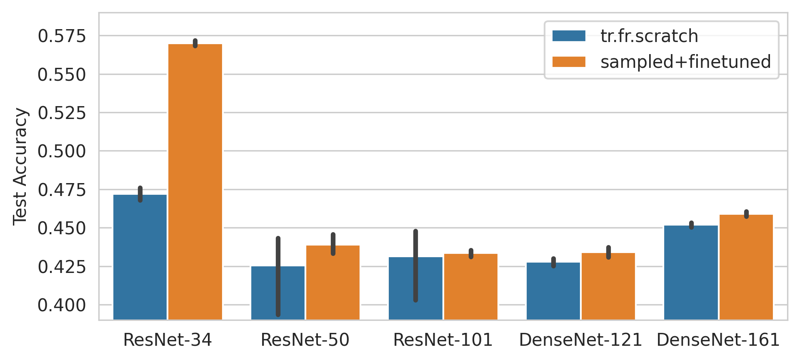
Figure 5: Comparison between sampled models and random initialization trained for 5 epochs Tiny-Imagenet. Different architectures are sampled from SANE pretrained on a ResNet-18 CIFAR-100 zoo. Although both models and tasks are changed, sampled models perform better.
图 5：采样模型与随机初始化模型在 Tiny-Imagenet 上训练 5 个轮次后的比较。不同架构的模型由在 ResNet-18 CIFAR-100 模型库上预训练的 SANE 采样得到。尽管模型和任务均发生了变化，采样模型仍表现更好。
Limitations局限性
In this paper, we pretrain SANE on homogeneous zoos with one architecture. This simplifies alignment for pre-training, but more importantly it simplifies evaluation for model generation. Since SANE can train on varying architectures and model sizes, the model population requirement for pre-training is significantly relaxed. A sufficient number of models are available on public model hubs. Further, our sampling method requires access to prompt examples, to have an informed prior from which to sample. For small models, bootstrapping from a Gaussian finds the targeted distribution; see SANE GAUSS in Table 3. For large models with correspondingly long sequences, that approach is too expensive, which is why we rely on prompt examples. Lastly, in this paper, we perform experiments only on computer vision tasks. This is a choice to simplify the experiment setup.
本文在仅包含一种架构的同质模型库上预训练 SANE。这简化了预训练时的对齐过程，但更重要的是简化了模型生成的评估。由于 SANE 能够在不同架构和规模的模型上进行训练，因此预训练对模型群体的要求显著放宽。公共模型托管平台上已有数量充足的模型。此外，我们的采样方法需要访问提示示例，以获得可供采样的、具有信息依据的先验。对于小模型，从高斯分布出发进行自举能够找到目标分布；参见表 3 中的 SANE GAUSS。对于序列长度相应较长的大模型，这种方法的成本过高，因此我们依赖提示示例。最后，本文仅在计算机视觉任务上开展实验。这一选择旨在简化实验设置。
6 Related Work6 相关工作
Representation learning in the space of NN weights has become a growing field recently. Several methods with different approaches to deal with weight spaces have been proposed to predict model properties such as accuracy (Unterthiner et al., 2020; Eilertsen et al., 2020; Andreis et al., 2023; Zhang et al., 2023) or to learn the encoded concepts (Ashkenazi et al., 2022; De Luigi et al., 2023). Other work investigates the structure of trained weights on a fundamental level, using their eigen or singular value decompositions to identify training phases or predict properties (Martin & Mahoney, 2019b; Martin & Mahoney, 2020; Martin et al., 2021; Martin & Mahoney, 2021; Yang et al., 2022; Meller & Berkouk, 2023). Taking an optimization perspective, other work has investigated the uniqueness of the basis of trained NNs (Ainsworth et al., 2022; Brown et al., 2023). Other work identifies subspaces of weights that are relevant, which motivates our work (Benton et al., 2021; Lucas et al., 2021; Wortsman et al., 2021; Fort & Jastrzebski, 2019). The mode connectivity of trained models has been investigated to improve understanding of how to train models (Draxler et al., 2018; Nguyen, 2019; Frankle et al., 2019).
神经网络权重空间中的表示学习近年来已成为一个不断发展的研究领域。已有研究提出了多种以不同方式处理权重空间的方法，用于预测准确率等模型属性 (Unterthiner et al., 2020; Eilertsen et al., 2020; Andreis et al., 2023; Zhang et al., 2023)，或学习其中编码的概念 (Ashkenazi et al., 2022; De Luigi et al., 2023)。另一些工作从基础层面研究训练后权重的结构，利用其特征值分解或奇异值分解来识别训练阶段或预测属性 (Martin & Mahoney, 2019b; Martin & Mahoney, 2020; Martin et al., 2021; Martin & Mahoney, 2021; Yang et al., 2022; Meller & Berkouk, 2023)。还有研究从优化角度探讨了训练后神经网络的基的唯一性 (Ainsworth et al., 2022; Brown et al., 2023)。另一些工作识别了权重中具有相关性的子空间，这为我们的研究提供了动机 (Benton et al., 2021; Lucas et al., 2021; Wortsman et al., 2021; Fort & Jastrzebski, 2019)。研究者还考察了训练后模型的模态连通性，以增进对模型训练方式的理解 (Draxler et al., 2018; Nguyen, 2019; Frankle et al., 2019)。
A different line of work trains models to generate weights for target models, such as HyperNetworks (Ha et al., 2016; Nguyen et al., 2019; Zhang et al., 2019; Knyazev et al., 2021; Knyazev et al., 2023; Kofinas et al., 2024), with a recurrent backbone (Wang et al., 2023) as learned initialization (Dauphin & Schoenholz, 2019) or for meta learning (Finn et al., 2017; Zhmoginov et al., 2022; Nava et al., 2022). While the last category uses data to get learning signals, another line of work learns representations of the weights directly. Hyper-Representations train an encoder-decoder architecture using reconstruction of the weights, with contrastive guidance, and has been proposed to predict model properties (Schürholt et al., 2021) or generate new models (Schürholt et al., 2022b; Schürholt et al., 2022a). While previous work was limited to small models of fixed length, this paper proposes methods to decouple the representation learner size from the base model. Related approaches use convolutional auto-encoders (Berardi et al., 2022) or diffusion on the weights (Peebles et al., 2022).
另一类工作通过训练模型来为目标模型生成权重，例如 HyperNetworks (Ha et al., 2016; Nguyen et al., 2019; Zhang et al., 2019; Knyazev et al., 2021; Knyazev et al., 2023; Kofinas et al., 2024)，以及采用循环骨干网络的方法 (Wang et al., 2023)，用于学习初始化 (Dauphin & Schoenholz, 2019) 或用于元学习 (Finn et al., 2017; Zhmoginov et al., 2022; Nava et al., 2022)。上述最后一类方法利用数据获取学习信号，而另一类工作则直接学习权重的表示。Hyper-Representations 通过权重重建并结合对比式引导来训练编码器—解码器架构，已有研究提出将其用于预测模型属性 (Schürholt et al., 2021) 或生成新模型 (Schürholt et al., 2022b; Schürholt et al., 2022a)。以往工作仅限于固定长度的小模型，而本文提出了将表示学习器的规模与基础模型解耦的方法。相关方法采用卷积自编码器 (Berardi et al., 2022) 或在权重上进行扩散 (Peebles et al., 2022)。
7 Conclusion7 结论
In this work, we propose SANE , a method to learn task-agnostic representations of Neural Network models. SANE decouples model tokenization from hyper-representation learning and can scale to much larger neural network models and generalize to models of different architectures. We analyze SANE embeddings and find they reveal model quality metrics. Empirical evaluations show that i) SANE embeddings contain information on model quality both globally and on a layer level, ii) SANE embeddings are predictive of model performance, and iii) sampling models with SANE achieves higher performance and generalizes to larger models and new architectures. Further, we propose sampling methods that reduce quality and quantity requirements for prompt examples and allow targeting new model distributions.
在本研究中，我们提出了 SANE，一种用于学习神经网络模型的任务无关表征的方法。SANE 将模型词元化与超表征学习解耦，能够扩展至规模大得多的神经网络模型，并泛化至不同架构的模型。我们分析了 SANE 嵌入，发现其能够揭示模型质量指标。实证评估表明，i) SANE 嵌入在全局和层级层面均包含模型质量信息，ii) SANE 嵌入能够预测模型性能，iii) 使用 SANE 采样得到的模型具有更高的性能，且该方法能够泛化至更大的模型和新的架构。此外，我们提出了一些采样方法，降低了对提示示例质量和数量的要求，并能够以新的模型分布为目标进行采样。
Acknowledgements致谢
KS and DB would like to acknowledge the Google Research Scholar Award and the Swiss National Science Foundation for partial funding of this work. We are thankful to Erik Vee at Google Research for the insightful discussions, Léo Meynent and Joelle Hanna for editorial support, and Harald Rotter, Kurt Städler, and Martin Eigenmann for the support with the computational infrastructure which made this project possible. MWM would like to acknowledge the NSF, DOE, and IARPA for partial support of this work.
KS 和 DB 感谢 Google 研究学者奖及瑞士国家科学基金会为本研究提供的部分资助。我们感谢 Google Research 的 Erik Vee 提供富有启发性的讨论，感谢 Léo Meynent 和 Joelle Hanna 提供编辑支持，并感谢 Harald Rotter、Kurt Städler 和 Martin Eigenmann 在计算基础设施方面提供支持，使本项目得以开展。MWM 感谢 NSF、DOE 和 IARPA 为本研究提供的部分支持。
Impact Statement影响声明
This paper introduces a novel weight representation learning method designed to enhance the performance and scalability of machine learning models across various applications. As a fundamental approach, it serves as a foundation for future advancements in the field of machine learning. SANE holds potential for use in both academic research and industry applications and thus inherits all their benefits but also risks for adverse applications of machine learning. Its versatility and scalability make SANE a valuable tool that may also offer insights into model interpretability.
本文提出了一种新颖的权重表征学习方法，旨在提升机器学习模型在各类应用中的性能和可扩展性。作为一种基础性方法，它为机器学习领域的未来发展奠定了基础。SANE 具有用于学术研究和工业应用的潜力，因此既具有这些应用的全部益处，也伴随着机器学习被用于不良用途的风险。SANE 的通用性和可扩展性使其成为一种有价值的工具，也可能为模型可解释性提供见解。
Appendix A Ablation Studies附录 A 消融研究
In this section, we perform ablation studies to assess the effectiveness of the methods proposed above: model alignment to simplify the learning task; inference window size to improve inference quality; haloing and batch-norm conditioning to increase sample quality.
本节通过消融研究评估上述方法的有效性：用于简化学习任务的模型对齐；用于改善推理质量的推理窗口大小；用于提高样本质量的光晕扩展和批归一化条件化。
Impact of Model Alignment.模型对齐的影响。
Table 6: Impact of alignment ablation and permutation on reconstruction loss.
表 6：对齐消融和置换对重构损失的影响。
| Sample Permutations 样本置换 | $\mathcal{L}_{rec}$ | |||
| Aligned 已对齐 | View 1 视图 1 | View 2 视图 2 | Train 训练 | Test 测试 |
| No | Perm. 置换 | Perm. 置换 | 0.304 | 0.167 |
| Yes 是 | Perm. 置换 | Perm. 置换 | 0.148 | 0.082 |
| Yes 是 | Align 对齐 | Perm. 置换 | 0.107 | 0.082 |
| Yes 是 | Align 对齐 | Align 对齐 | 0.072 | 0.082 |
Model alignment intuitively reduces training complexity by mapping all models to the same subspace. To evaluate its impact, we conduct training experiments with the same configuration on datasets with and without aligned models. In the dataset with aligned models, we use either the aligned form or 5 random permutations for the two views for both reconstruction and contrastive learning. As shown in Table 6, the results show two effects. First, alignment through git re-basin simplifies the learning task and contributes to improved generalization, both training and test losses are reduced by more than 50%. Second, anchoring at least one of the views to the aligned form does further reduce the training loss, but does not improve generalization.
直观而言，模型对齐通过将所有模型映射到同一子空间来降低训练复杂度。为评估其影响，我们在模型经过对齐和未经对齐的数据集上，采用相同配置开展训练实验。对于模型经过对齐的数据集，在重构学习和对比学习中，我们均使用对齐形式或 5 个随机置换来构造两个视图。如表 6 所示，结果体现了两方面的效果。首先，通过 git re-basin 进行对齐可简化学习任务并有助于改善泛化，训练损失和测试损失均降低了超过 50%。其次，将至少一个视图锚定为对齐形式可进一步降低训练损失，但无法改善泛化。
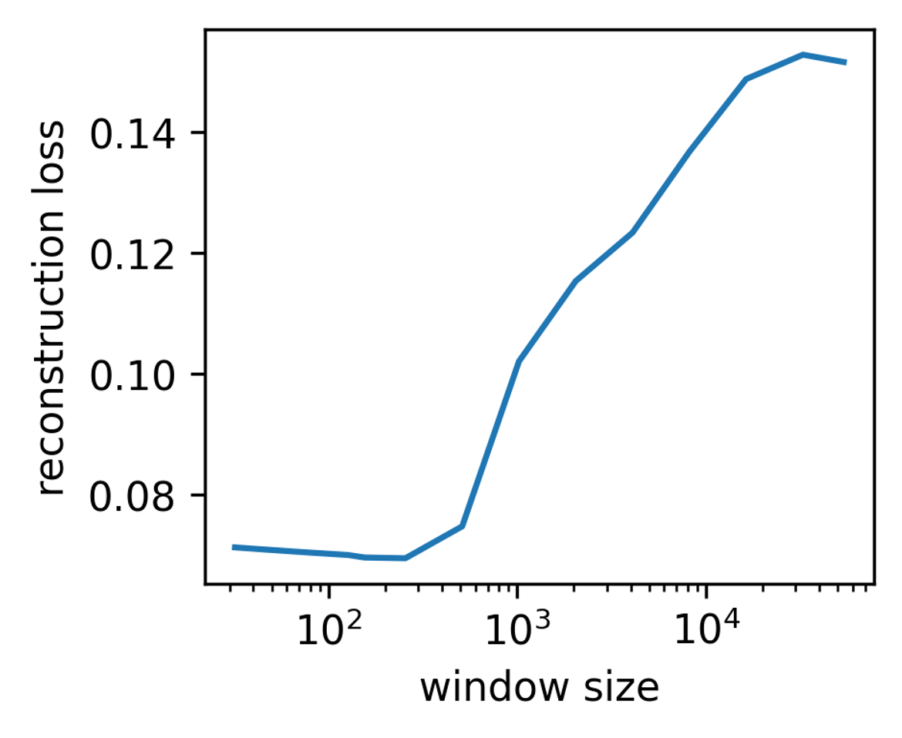
Figure 6: SANE reconstruction loss over number of tokens within a window. The loss is lowest around the training windowsize of 256 tokens, longer sequences up to the full model sequence length of 50k tokens cause interference and double the reconstruction error.
图 6：SANE 重构损失随窗口内词元数量的变化。在训练窗口大小为 256 个词元附近，损失最低；更长的序列直至包含 50k 个词元的完整模型序列会引发干扰，并使重构误差加倍。
Window Size Ablation.窗口大小消融。
The sequential decomposition of SANE allows one to pretrain not on the full model sequence, but on subsequences. The choice of the length of the subsequence, the window size, is a critical parameter that balances computational load and context. We used a window of 256 for pretraining for most of our experiments.
SANE 的序列分解使得预训练可以在子序列上进行，而非在完整模型序列上进行。子序列长度，即窗口大小，是平衡计算负载与上下文的关键参数。在大多数实验中，我们使用大小为 256 的窗口进行预训练。
Here, we study the influence of the window size on reconstruction error, exploring values ranging from 32 to 2048. Our experiments did not reveal substantial impact of smaller windows on pretraining loss or sampling performance. This seems to suggest that a window size as large as 2048 may still be insufficient on ResNets to capture enough context. Alternatively, it may suggest that the underlying assumption that context matters may not entirely hold up.
这里，我们研究窗口大小对重构误差的影响，考察的取值范围为 32 至 2048。实验未发现较小窗口对预训练损失或采样性能有显著影响。这似乎表明，对于 ResNets，即使窗口大小达到 2048，也可能仍不足以捕获充分的上下文。另一种可能的解释是，上下文至关重要这一基本假设可能并不完全成立。
However, we did observe an important impact on the relationship between training and inference window sizes. During inference, memory load is significantly lower. Inference allows much larger window sizes, up to the entire length of the ResNet sequence. However, departing from the training window size appears to introduce interference, which affects the reconstruction error (Figure 6).
然而，我们确实观察到训练窗口大小与推理窗口大小之间的关系会产生重要影响。推理期间的内存负载显著降低。推理允许使用大得多的窗口，最大可覆盖整个 ResNet 序列。然而，偏离训练窗口大小似乎会引入干扰，进而影响重构误差（图 6）。
Halo and batch-norm conditioning.光晕扩展和批归一化条件化。
Table 7: Ablation of batch-norm conditioning and haloing.
表 7：批归一化条件化和光晕扩展的消融。
| Ep. | Method 方法 | CIFAR-10 |
| 0 | rand init 随机初始化 | $\sim$10 /% |
| naïve | 10$\pm$0.0 | |
| Haloed 光晕扩展 | 14.5$\pm$6.3 | |
| BN-cond 批归一化条件化 | 60.8$\pm$2.2 | |
| Haloed+BN-cond 光晕扩展+批归一化条件化 | 64.8$\pm$2.1 | |
| 5 | rand init 随机初始化 | 64.4$\pm$2.9 |
| naïve | 90.8$\pm$0.2 | |
| Haloed 光晕扩展 | 90.9$\pm$0.1 | |
| BN-cond 批归一化条件化 | 90.7$\pm$0.2 | |
| Haloed+BN-cond 光晕扩展+批归一化条件化 | 90.9$\pm$0.2 |
Haloing and batch-norm conditioning aim at reducing noise in model sampling; see Section 2. To assess their impact on sampling performance, we conduct an in-domain experiment using SANE trained on CIFAR-10 ResNet-18s, using prompt examples from the train set and fine-tuning on CIFAR-10. We compare with naïve sampling without haloing and batch-norm conditioning. The results in Table 7 show the significant improvements achieved by both haloing and batch-norm conditioning. From random guessing of naïve sampling, combining both improves to around 65%. Since both methods aim at reducing noise for zero-shot sampling, their effect is largest then and diminishes somewhat during finetuning. Both methods not only improve zero-shot sampling per se but make the sampled models provide enough signal to facilitate subsampling or bootstrapping strategies.
光晕处理和批归一化条件化旨在减少模型采样中的噪声；见第 2 节。为评估二者对采样性能的影响，我们开展了一项域内实验，使用在 CIFAR-10 ResNet-18 模型上训练的 SANE，以训练集中的样例作为提示，并在 CIFAR-10 上进行微调。我们将其与不采用光晕处理和批归一化条件化的朴素采样进行比较。表 7 的结果显示，光晕处理和批归一化条件化均带来了显著改进。朴素采样的性能仅相当于随机猜测，而结合这两种方法后，性能提升至约 65%。由于这两种方法均旨在减少零样本采样中的噪声，因此其效果在零样本采样时最为显著，并在微调过程中有所减弱。这两种方法不仅改善了零样本采样本身，还使采样得到的模型能够提供足够的信号，从而支持子采样或自举策略。
Appendix B SANE Architecture Details附录 B SANE 架构细节
Table 8: Architecture Details for SANE
表 8：SANE 的架构细节
| Hyper-Parameter 超参数 | CNNs | ResNet-18 |
| tokensize | 289 | 288 |
| sequence lenght 序列长度 | $\sim$50 | $\sim$50k |
| window size 窗口大小 | 32 | 256, 512 |
| d_model | 1024 | 2048 |
| latent_dim | 128 | 128 |
| transformer layers Transformer 层数 | 4 | 8 |
| transformer heads Transformer 头数 | 4,8 | 4,8 |
In Table 8, we provide additional information on the training hyper-parameters for SANE on populations of small CNNs as well as ResNet18s. These values are the stable mean across all experiments, exact values can vary from population to population. Full experiment configurations are documented in the code.
表 8 提供了 SANE 在小型 CNN 群体以及 ResNet18 群体上训练时所用超参数的更多信息。这些数值是所有实验中保持稳定的平均值，具体数值可能因群体而异。完整的实验配置记录在代码中。
Appendix C SANE Embedding Analysis - Additional Results附录 C SANE 嵌入分析——补充结果
This section contains additional results on SANE embedding analysis, in comparison with previous weight matrix analysis. In Figure 7, we compare the eigenvalue distribution for different models with SANE embeddings. Replicating the experiment setup from (Martin & Mahoney, 2019b; Martin & Mahoney, 2021), we train MiniAlexNet models on CIFAR-10 varying only the batch size. With a smaller batch size and longer training duration, the eigenvalue distribution transitions from random with very few spikes, over a bulk with many spikes, to heavy-tailed. The embeddings of SANE appear to also become more heavy-tailed, but do not seem to pick up on the change from few to many spikes. The results are suggestive, pointing to obvious follow-up work.
本节给出 SANE 嵌入分析的补充结果，并与以往的权重矩阵分析进行比较。在图 7 中，我们将不同模型的特征值分布与 SANE 嵌入进行比较。我们复现了 (Martin & Mahoney, 2019b; Martin & Mahoney, 2021) 的实验设置，在 CIFAR-10 上训练 MiniAlexNet 模型，仅改变批大小。随着批大小减小、训练时间延长，特征值分布从仅有极少尖峰的随机分布，经过具有许多尖峰的主体分布，转变为重尾分布。SANE 的嵌入似乎也变得更具重尾特性，但似乎未能捕捉到尖峰由少到多的变化。这些结果具有启发性，指出了明确的后续研究方向。
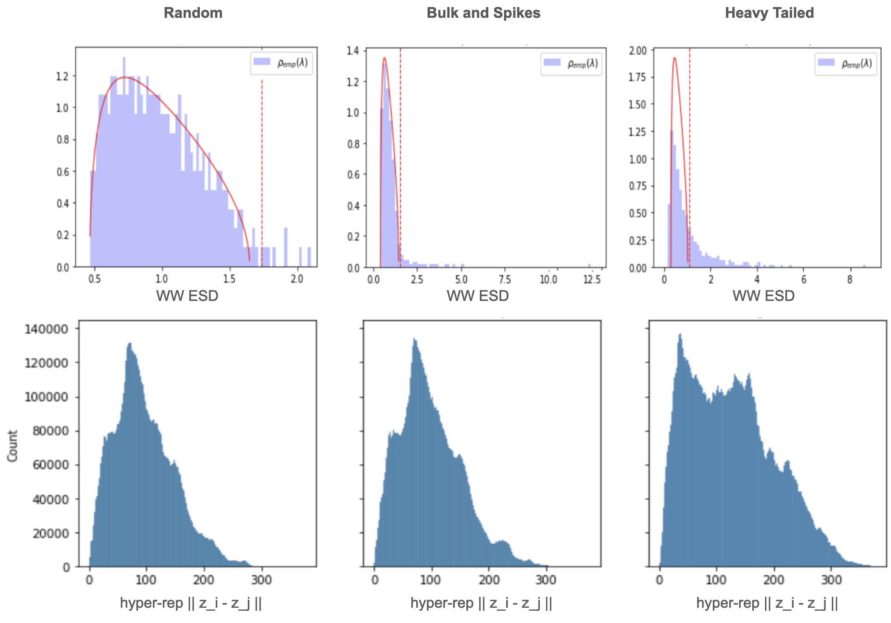
Figure 7: Comparison between WeightWatcher features (top) and SANE (bottom). Martin & Mahoney (2019b) identify different phases in the eigenvalue spectrum of trained weight matrices. We replicate the experiment setup and find ESDs similar to random (top left), bulk and spikes (top middle) and heavy-tailed (top right). We compare these against pairwise distances of SANE embeddings of the same layer. While the distributions have a different shape, it appears to become more heavy-tailed going from random to heavy tailed.
图 7：WeightWatcher 特征（上）与 SANE（下）的比较。Martin & Mahoney (2019b) 在训练所得权重矩阵的特征值谱中识别出了不同阶段。我们复现了该实验设置，发现所得经验谱分布（ESD）分别呈现类似随机分布（左上）、主体与尖峰（中上）以及重尾分布（右上）的形态。我们将这些分布与同一层的 SANE 嵌入之间的成对距离进行比较。尽管这些分布的形状不同，但随着特征值分布从随机分布转变为重尾分布，嵌入距离分布似乎也变得更具重尾特性。
Figures 8 and 9 compare SANE with different WeightWatcher metrics on VGGs from pytorchcv (Sémery, 2024) and the ResNet-18 zoo from the modelzoo dataset (Schürholt et al., 2022c).
图 8 和图 9 在来自 pytorchcv (Sémery, 2024) 的 VGG 模型以及来自 modelzoo 数据集 (Schürholt et al., 2022c) 的 ResNet-18 模型库上，将 SANE 与不同的 WeightWatcher 指标进行了比较。
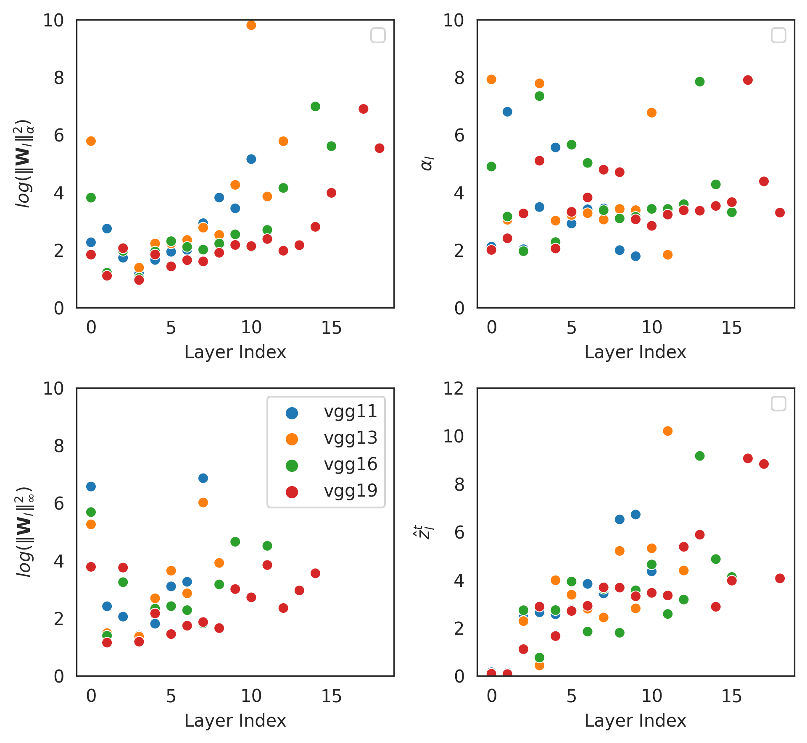
Figure 8: Comparison between different WeightWatcher (WW) features (left) and SANE (right). Features over layer index for VGGs from pytorchcv of different sizes. SANE shows similar trends to WW, low values at early layers and a sharp increase at the end.
图 8：不同 WeightWatcher（WW）特征（左）与 SANE（右）的比较。图中展示了来自 pytorchcv 的不同规模 VGG 模型的特征随层索引的变化。SANE 呈现出与 WW 相似的趋势，即在前几层取值较低，在末尾急剧上升。
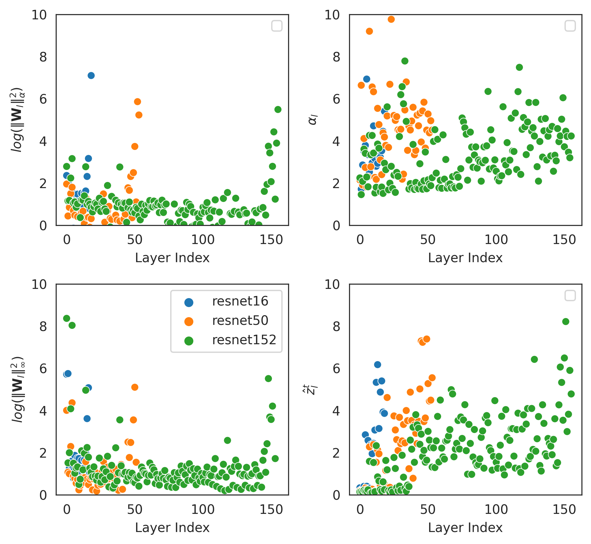
Figure 9: Comparison between different WeightWatcher (WW) features (left) and SANE (right). Features over layer index for Resnets from pytorchcv of different sizes. SANE shows similar trends to WW, low values at early layers and a sharp increase at the end.
图 9：不同 WeightWatcher（WW）特征（左）与 SANE（右）的比较。图中展示了来自 pytorchcv 的不同规模 Resnets 模型的特征随层索引的变化。SANE 呈现出与 WW 相似的趋势，即在前几层取值较低，在末尾急剧上升。
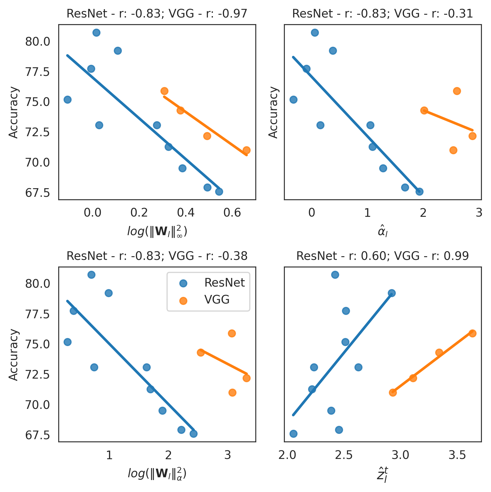
Figure 10: Comparison between WeightWatcher features (left) and SANE (right). Accuracy over model features for Resnets and VGGs from pytorchcv of different sizes. SANE shows similar trends to WW, low values at early layers and a sharp increase at the end.
图 10：WeightWatcher 特征（左）与 SANE（右）的比较。图中展示了来自 pytorchcv 的不同规模 Resnets 和 VGG 模型的准确率与模型特征之间的关系。SANE 呈现出与 WW 相似的趋势，即在前几层取值较低，在末尾急剧上升。
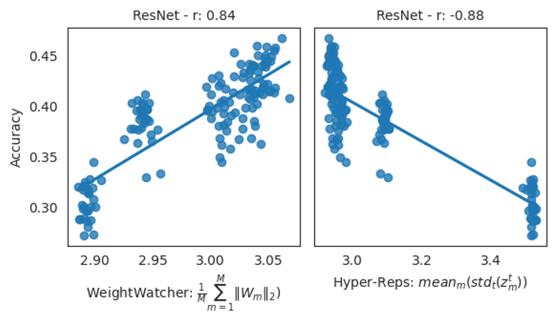
Figure 11: Comparison between WeightWatcher features (left) and SANE (right). Accuracy over model features for ResNets from the ResNet model zoo. Although SANE is pretrained in a self-supervised fashion, it preserves the linear relation of a globally-aggregated embedding to model accuracy.
图 11：WeightWatcher 特征（左）与 SANE（右）的比较。图中展示了来自 ResNet 模型库的 ResNets 模型的准确率与模型特征之间的关系。尽管 SANE 以自监督方式进行预训练，但其仍保留了全局聚合嵌入与模型准确率之间的线性关系。
Appendix D Model Property Prediction - Additional Results附录 D 模型属性预测——补充结果
In this section, we provide additional details for Section 5.1. Table 9 shows full results for populations of small CNNs.
本节提供第 5.1 节的补充细节。表 9 展示了小型 CNN 群体的完整结果。
Table 9: Property prediction on populations of small CNNs.
表 9：小型 CNN 群体的属性预测。
| MNIST | SVHN | CIFAR-10 (CNN) | STL | ||||||||||||
| W | $s(W)$ | SANE | W | $s(W)$ | SANE | W | $s(W)$ | SANE | W | $s(W)$ | SANE | ||||
| ACC | 0.965 | 0.987 | 0.978 | 0.910 | 0.985 | 0.991 | -7.580 | 0.965 | 0.885 | -18.818 | 0.919 | 0.305 | |||
| Epoch 训练轮次 | 0.953 | 0.974 | 0.958 | 0.833 | 0.953 | 0.930 | 0.636 | 0.923 | 0.771 | -1.926 | 0.977 | 0.344 | |||
| Ggap | 0.246 | 0.393 | 0.402 | 0.479 | 0.711 | 0.760 | 0.324 | 0.909 | 0.772 | -0.617 | 0.858 | 0.307 |
D.1 Comparison to Previous WorkD.1 与以往工作的比较
Here, we compare SANE with previous work to disseminate the information contained in model embeddings. The experiment setup in this paper is designed around the ResNets, and therefore it uses sparse epochs for computational efficiency. For consistency, we use the same setup for the CNN zoos as well. The exact numbers are therefore not directly comparable to Schürholt et al. (2021). To provide as much context as possible, we approach the comparison from two angles:
在此，我们将 SANE 与以往工作进行比较，以呈现模型嵌入中包含的信息。本文的实验设置围绕 ResNets 设计，因此采用稀疏选取的训练轮次以提高计算效率。为保持一致性，我们对 CNN 模型库也采用相同设置。因此，具体数值无法与 Schürholt et al. (2021) 直接比较。为提供尽可能充分的背景信息，我们从两个角度进行比较：
(1) Direct comparison to the published results: to contextualize, we use the (deterministic) results of weight statistics $s(W)$ to adjust for the differences in setup. We mark the results for $s(W)$ from Schürholt et al. (2021) as $s(W)_{pp}$ and compare to their $E_{c+}D$ where possible.
(1) 与已发表结果直接比较：为提供比较背景，我们使用权重统计量 $s(W)$ 的（确定性）结果来校正实验设置差异带来的影响。我们将 Schürholt et al. (2021) 中 $s(W)$ 的结果记为 $s(W)_{pp}$，并在可能的情况下与其 $E_{c+}D$ 进行比较。
(2) Approximation of the effect of global embeddings: previous work used global model embeddings, which we approximate by using the full model embedding sequence. We therefore compare SANE + aggregated tokens (as proposed in the submission) to SANE + full model sequence (similar to Schürholt et al. (2021)).
(2) 全局嵌入效果的近似：先前工作使用全局模型嵌入，我们通过使用完整的模型嵌入序列对其进行近似。因此，我们将 SANE + 聚合词元（如投稿稿件中所提出的）与 SANE + 完整模型序列（类似于 Schürholt et al. (2021)）进行比较。
The results in the Tables below allow the following conclusions:
下列表格中的结果支持以下结论：
(1) SANE matches the performance of previous work: The only data available for direct comparison is the MNIST zoo. Here, both in direct comparison and in relation to s(W) cross-relating our results with published numbers, SANE matches published performance of $E_{c}+D$. On other zoos, $E_{c}+D$ had similar performance to $s(W)$. We likewise find SANE embeddings to have similar performance to $s(W)$ in our experiments.
(1) SANE 达到了先前工作的性能：唯一可用于直接比较的数据来自 MNIST 模型库。在该模型库上，无论是直接比较，还是以 s(W) 为参照将我们的结果与已发表的数值进行交叉比较，SANE 均达到了已发表的 $E_{c}+D$ 的性能。在其他模型库上，$E_{c}+D$ 的性能与 $s(W)$ 相近。同样，在我们的实验中，SANE 嵌入的性能也与 $s(W)$ 相近。
(2) SANE + full sequence improves downstream task performance over the SANE + aggregated sequence: That indicates that SANE + full sequence contains more information for model prediction. However, both Schürholt et al. (2021) and SANE with full sequence have the disadvantage that they do not scale. With growing models, the representation learner of Schürholt et al. (2021) and the input to the linear probe of SANE + full sequence grow accordingly. SANE + aggregated sequence does lose some information on small models, but scales gracefully to large models and remains competitive.
(2) 与 SANE + 聚合序列相比，SANE + 完整序列提高了下游任务的性能：这表明 SANE + 完整序列包含更多用于模型预测的信息。然而，Schürholt et al. (2021) 的方法和使用完整序列的 SANE 都存在无法扩展的缺点。随着模型规模增大，Schürholt et al. (2021) 的表示学习器以及 SANE + 完整序列的线性探针输入也相应增大。SANE + 聚合序列在小模型上确实会损失一些信息，但能够平稳地扩展至大模型，并保持竞争力。
Table 10: Property Prediction comparison to previous work on the MNIST-CNN model zoo. We compare our linear probing results from weights $W$, layer-wise quintiles $s(W)$, embeddings from SANE either aggregated into one embedding or using the full sequence to results previously published in Schürholt et al. (2021). We mark their results for $s(W)$ as $s(W)_{pp}$. Since the experimental setup is not the same, the numbers of $s(W)$ do not match.
表 10：在 MNIST-CNN 模型库上与先前工作进行属性预测比较。我们将基于权重 $W$、逐层五分位数 $s(W)$、聚合为单个嵌入或使用完整序列的 SANE 嵌入所获得的线性探测结果，与 Schürholt et al. (2021) 先前发表的结果进行比较。我们将其 $s(W)$ 的结果标记为 $s(W)_{pp}$。由于实验设置不同，$s(W)$ 的数值并不一致。
| W | $s(W)$ | SANE aggregated SANE 聚合 | SANE full sequence SANE 完整序列 | $s(W)_{pp}$ | $E_{c+}D$ | |
| ACC | 0.965 | 0.987 | 0.978 | 0.987 | 0.977 | 0.973 |
| Epoch 训练轮次 | 0.953 | 0.974 | 0.958 | 0.975 | 0.987 | 0.989 |
| Ggap | 0.246 | 0.393 | 0.402 | 0.461 | 0.662 | 0.667 |
Table 11: Property Prediction comparison to previous work on the SVHN-CNN model zoo. We compare our linear probing results from weights $W$, layer-wise quintiles $s(W)$, to embeddings from SANE either aggregated into one embedding or using the full sequence. For this zoo, previous results are not available.
表 11：在 SVHN-CNN 模型库上与先前工作进行属性预测比较。我们将基于权重 $W$、逐层五分位数 $s(W)$ 获得的线性探测结果，与基于聚合为单个嵌入或使用完整序列的 SANE 嵌入所获得的结果进行比较。该模型库尚无先前结果可用。
| W | $s(W)$ | SANE aggregated SANE 聚合 | SANE full sequence SANE 完整序列 | $s(W)_{pp}$ | $E_{c+}D$ | |
| ACC | 0.910 | 0.985 | 0.991 | 0.993 | n/a | n/a |
| Epoch 训练轮次 | 0.833 | 0.953 | 0.930 | 0.943 | n/a | n/a |
| Ggap | 0.479 | 0.711 | 0.760 | 0.77 | n/a | n/a |
Table 12: Property Prediction comparison to previous work on the CIFAR-CNN(m) model zoo. We compare our linear probing results from weights $W$, layer-wise quintiles $s(W)$, to embeddings from SANE either aggregated into one embedding or using the full sequence. For this zoo, previous results are not available.
表 12：在 CIFAR-CNN(m) 模型库上与先前工作进行属性预测比较。我们将基于权重 $W$、逐层五分位数 $s(W)$ 获得的线性探测结果，与基于聚合为单个嵌入或使用完整序列的 SANE 嵌入所获得的结果进行比较。该模型库尚无先前结果可用。
| W | $s(W)$ | SANE aggregated SANE 聚合 | SANE full sequence SANE 完整序列 | $s(W)_{pp}$ | $E_{c+}D$ | |
| ACC | -7.580 | 0.965 | 0.885 | 0.947 | n/a | n/a |
| Epoch 训练轮次 | 0.636 | 0.923 | 0.771 | 0.879 | n/a | n/a |
| Ggap | 0.324 | 0.909 | 0.772 | 0.811 | n/a | n/a |
Appendix E Model Generation - Additional Results附录 E 模型生成——补充结果
This section contains additional results from model sampling experiments, extending Section 5.2. In Table 13, we show results on small CNNs transferring to a new task. Similarly, Table 14 shows results on ResNet-18 models for task transfers. Lastly, Tables 15, 16 and 17 contain additional results for transferring from ResNet-18 CIFAR-100 to ResNet34 and/or Tiny-Imagenet.
本节提供模型采样实验的补充结果，对第 5.2 节进行扩展。表 13 展示了小型 CNN 迁移至新任务的结果。类似地，表 14 展示了 ResNet-18 模型进行任务迁移的结果。最后，表 15、16 和 17 提供了从 ResNet-18 CIFAR-100 迁移至 ResNet34 和/或 Tiny-Imagenet 的补充结果。
Table 13: Model generation on CNN model populations transfer learned on a new task. We compare sampled models at different epochs with models trained from scratch and models fine-tuned from the anchor samples.
表 13：在针对新任务进行迁移学习的 CNN 模型群体上进行模型生成。我们将不同训练轮次下的采样模型与从头训练的模型以及由锚点样本微调得到的模型进行比较。
| Method 方法 | SVHN to MNIST 从 SVHN 到 MNIST | CIFAR-10 to STL-10 从 CIFAR-10 到 STL-10 | ||||
| Epoch 0 第 0 轮 | Epoch 1 第 1 轮 | Epoch 25 第 25 轮 | Epoch 0 第 0 轮 | Epoch 1 第 1 轮 | Epoch 25 第 25 轮 | |
| tr.fr.scratch 从头训练 | $\sim$10 /% | 20.6+-1.6 | 83.3+-2.6 | $\sim$10 /% | 21.3+-1.6 | 44.0+-1.0 |
| pretrained 预训练 | 29.1+-7.2 | 84.1+-2.6 | 94.2+-0.7 | 16.2+-2.3 | 24.8+-0.8 | 49.0+-0.9 |
| $S_{KDE30}$ | 31.8+-5.6 | 86.9+-1.4 | 95.5+-0.4 | n/a | n/a | n/a |
| SANE KDE30 | 40.2+-4.8 | 86.7+-1.6 | 94.8+-0.4 | 15.5+-2.3 | 24.9+-1.6 | 49.2+-0.5 |
| SANE SUB. | 37.9+-2.8 | 88.2+-0.5 | 95.6+-0.3 | 17.4+-1.4 | 25.6+-1.7 | 49.8+-0.6 |
Table 14: Model generation on ResNet-18 model populations transferred to a new task. We compare sampled models at different transfer learning epochs with models trained from scratch and models fine-tuned from the same anchor samples.
表 14：在迁移至新任务的 ResNet-18 模型群体上进行模型生成。我们将不同迁移学习轮次下的采样模型与从头训练的模型以及由相同锚点样本微调得到的模型进行比较。
| Epoch 训练轮次 | Method 方法 | CIFAR-10 to CIFAR-100 从 CIFAR-10 到 CIFAR-100 | CIFAR-100 to Tiny-Imagenet 从 CIFAR-100 到 Tiny-Imagenet | Tiny-Imagenet to CIFAR-100 从 Tiny-Imagenet 到 CIFAR-100 |
| 0 | tr. fr. scratch 从头训练 | $\sim$1 /% | $\sim$0.5 /% | $\sim$1 /% |
| Finetuned 微调 | 1.0+-0.3 | 0.5+-0.0 | 1.1+-0.2 | |
| SANE KDE30 | 1.0+-0.3 | 0.5+-0.1 | 1.0+-0.2 | |
| SANE SUB | 1.0+-0.3 | 0.6+-0.0 | 1.1+-0.2 | |
| SANE BOOT | 1.1+-0.2 | 0.5+-0.0 | 0.9+-0.2 | |
| 1 | tr. fr. scratch 从头训练 | 17.5+-0.7 | 13.8+-0.8 | 17.5+-0.7 |
| Finetuned 微调 | 27.5+-1.3 | 25.7+-0.5 | 51.7+-0.5 | |
| SANE KDE30 | 26.8+-1.4 | 21.5+-0.9 | 40.2+-1.0 | |
| SANE SUB | 26.4+-1.9 | 21.5+-1.0 | 40.63+-1.3 | |
| SANE BOOT | 25.7_01.9 | 21.7+-1.0 | 40.9+-0.8 | |
| 5 | tr. fr. scratch 从头训练 | 36.5+-2.0 | 31.1+-1.6 | 36.5+-2.0 |
| Finetuned 微调 | 45.7+-1.0 | 36.3+-2.5 | 52.6+-1.3 | |
| SANE KDE30 | 44.5+-2.0 | 36.3+-1.2 | 47.2+-3.3 | |
| SANE SUB | 45.6+-1.2 | 35.8+-1.4 | 49.8+-2.3 | |
| SANE BOOT | 43.3+-2.4 | 37.3+2.0 | 50.2+-3.4 | |
| 15 | tr. fr. scratch 从头训练 | 53.3+-2.0 | 38.5+-1.9 | 53.3+-2.0 |
| Finetuned 微调 | 71.9+-0.1 | 63.4+-0.2 | 73.9+-0.3 | |
| SANE KDE30 | 71.8+-0.3 | 63.6+-0.2 | 73.4+-0.2 | |
| SANE SUB | 72.0+-0.2 | 63.6+-0.3 | 73.5+-0.2 | |
| SANE BOOT | 71.9+-0.3 | 63.4+-0.1 | 73.7+-0.3 | |
| 25 | tr. fr. scratch 从头训练 | 56.5+-2.0 | 43.3+-1.9 | 56.5+-2.0 |
| 50 | tr. fr. scratch 从头训练 | 70.7+-0.4 | 57.3+-0.6 | 70.7+-0.4 |
| 60 | tr. fr. scratch 从头训练 | 74.2+-0.3 | 63.9+-0.5 | 74.2+-0.3 |
Table 15: Few-shot model generation for a new task: Sampling ResNet-34 models for CIFAR-100. SANE was pretrained on CIFAR-100 ResNet-18s, 5 samples are drawn using subsampling. To get prompt examples, we train 3 ResNet-34 models on CIFAR-100 for 2 epochs to a mean accuracy of 26 %.
表 15：面向新任务的小样本模型生成：为 CIFAR-100 采样 ResNet-34 模型。SANE 在 CIFAR-100 的 ResNet-18 模型上进行预训练，并通过子采样抽取 5 个样本。为获得提示示例，我们在 CIFAR-100 上训练 3 个 ResNet-34 模型，共训练 2 轮，使平均准确率达到 26 %。
| CIFAR100 ResNet-18 to ResNet-34 CIFAR100 上从 ResNet-18 到 ResNet-34 | |||
| Ep. | Method 方法 | 5 Epochs 5 轮 | 15 Epochs 15 轮 |
| 0 | tr. fr. Scratch 从头训练 | 1.0$\pm$0.1 | 1.0$\pm$0.1 |
| SANE | 1.6$\pm$0.3 | 1.6$\pm$0.3 | |
| 1 | tr. fr. Scratch 从头训练 | 12.4$\pm$1.0 | 12.9$\pm$0.8 |
| SANE | 16.8$\pm$0.7 | 23.1$\pm$0.3 | |
| 5 | tr. fr. Scratch 从头训练 | 49.5$\pm$0.6 | 36.2$\pm$1.7 |
| SANE | 51.9$\pm$0.6 | 37.8$\pm$1.4 | |
| 15 | tr. fr. scratch 从头训练 | 68.8$\pm$0.4 | |
| SANE | 69.3$\pm$0.3 | ||
| SANE Ens. | 53.5 | 71.3 |
Table 16: Few-shot model generation for a new task and architecture: SANE trained on CIFAR-100 ResNet-18s used to generate ResNet-34s for Tiny-Imagenet. 5 samples are drawn using subsampling. To get prompt examples, we train 3 ResNet-34 models on Tiny-Imagenet for 2 epochs to a mean accuracy of 28.5 %.
表 16：面向新任务和新架构的小样本模型生成：将在 CIFAR-100 的 ResNet-18 模型上训练的 SANE 用于为 Tiny-Imagenet 生成 ResNet-34 模型。通过子采样抽取 5 个样本。为获得提示示例，我们在 Tiny-Imagenet 上训练 3 个 ResNet-34 模型，共训练 2 轮，使平均准确率达到 28.5 %。
| ResNet-18 CIFAR100 to ResNet-34 Tiny-Imagenet 从 ResNet-18 CIFAR100 到 ResNet-34 Tiny-Imagenet | |||
| Ep. | Method 方法 | 5 epochs 5 轮 | 15 epochs 15 轮 |
| 0 | tr. fr. Scratch 从头训练 | 0.5$\pm$0.0 | 0.5$\pm$0.0 |
| SANE | 0.5$\pm$0.1 | 0.6$\pm$0.2 | |
| 1 | tr. fr. Scratch 从头训练 | 10.5$\pm$1.4 | 11.9$\pm$1.9 |
| SANE | 13.3$\pm$0.5 | 18.5$\pm$0.7 | |
| 5 | tr. fr. Scratch 从头训练 | 47.2$\pm$0.7 | 31.1$\pm$1.7 |
| SANE | 50.6$\pm$0.3 | 31.6$\pm$0.6 | |
| 15 | tr. fr. Scratch 从头训练 | 61.9$\pm$0.3 | |
| SANE | 62.7$\pm$0.3 | ||
| SANE Ens. | 52 | 65.1 |
E.1 Diversity of sampled modelsE.1 采样模型的多样性
An interesting question is whether sampling SANE generates versions of the same model. To test that, we evaluate the diversity of samples generated with only a few few-shot examples by combining the models to ensembles. The improvements of the ensembles over the individual models demonstrate their diversity. This indicates that given very few, early-stage prompt examples, sampling hyper-representations improves learning speed and performance in otherwise equal settings. Additionally, we conducted experiments with varying numbers of prompt examples, revealing that increasing the number of prompt examples enhances both performance and diversity. Nonetheless, even a single prompt example trained for just 2 epochs contains sufficient information to generate model samples that surpass those derived from random initialization; see Table 17.
一个有趣的问题是，对 SANE 进行采样是否会生成同一模型的不同版本。为检验这一点，我们将仅使用少量小样本示例生成的模型组合为集成模型，以评估所生成样本的多样性。集成模型相较于单个模型的性能提升表明了这些模型的多样性。这表明，在给定极少量处于训练早期阶段的提示示例时，在其他条件相同的情况下，对超表示进行采样能够提高学习速度和性能。此外，我们还使用不同数量的提示示例开展了实验，结果表明，增加提示示例的数量可以同时提升性能和多样性。尽管如此，即使只有一个仅训练了 2 轮的提示示例，也包含足够的信息，能够生成优于从随机初始化得到的模型样本；见表 17。
Table 17: Sampling ResNet-34 models for CIFAR-100. SANE was pretrained on CIFAR-100 ResNet-18s, 5 samples are drawn using subsampling. To get prompt examples, we train a single ResNet-34 model on CIFAR-100 for 2 epochs to an accuracy of 26 %.
表 17：为 CIFAR-100 采样 ResNet-34 模型。SANE 在 CIFAR-100 上的 ResNet-18 模型上进行预训练，并使用子采样抽取 5 个样本。为获取提示示例，我们在 CIFAR-100 上训练单个 ResNet-34 模型 2 轮，使其准确率达到 26 %。
| CIFAR100 ResNet-18 to ResNet-34 CIFAR100 ResNet-18 到 ResNet-34 | |||
| Epoch 轮次 | Method 方法 | 5 Epochs 5 轮 | 15 Epochs 15 轮 |
| 0 | tr. fr. Scratch 从头训练 | 1.0+-0.1 | 1.0+-0.1 |
| SANE | 1.5+-0.2 | 1.6+-0.1 | |
| 1 | tr. fr. Scratch 从头训练 | 12.4+-1.0 | 12.9+-0.8 |
| SANE | 16.9+-0.7 | 19.4+-0.2 | |
| 5 | tr. fr. Scratch 从头训练 | 49.5+-0.6 | 36.2+-1.7 |
| SANE | 51.5+-0.3 | 38.6+-1.6 | |
| 15 | tr. fr. scratch 从头训练 | 68.8+-0.4 | |
| SANE | 69.1+-0.1 | ||
| Ensemble 集成 | SANE | 51.8 | 70.2 |